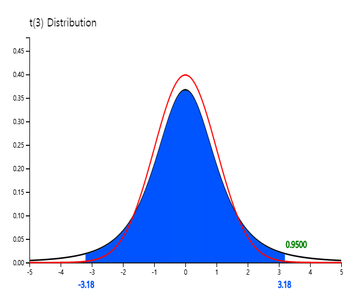
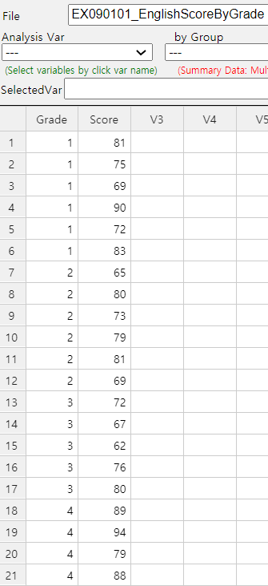

• What is the sampling distribution of sample means is, and how can we we estimate a population mean
using the sampling distribution in section 5.1?
• What a testing hypothesis is and the testing hypothesis for a single population mean in section 5.2.
• Testing hypothesis for comparing two population means in section 5.3.
• Testing hypothesis for comparing several populations means using analysis of variance in section 5.4.
• Correlation and regression analysis to analyze the relation between several continuous variables in section 5.5.
5.1 Sampling distribution and estimation
A population is usually very massive, and it is difficult and costly to investigate the entire population.
Therefore, characteristic values of the population, such as a population mean
and variance called population parameters, are usually estimated using a set of samples.
Characteristic values of samples, such as a sample mean and sample variance called sample statistic.
The distribution of all possible values of the sample statistic is called a sampling distribution.
The sampling distribution identifies a relationship between the sample statistic and population parameter,
making it possible to estimate and to test a population parameter. Section 5.1.1 discusses the sampling distribution
of all possible sample means, and section 5.1.2 discusses how to estimate the population mean using
the sampling distribution.
5.1.1 Sampling distribution of sample means
A population mean μ is called a parameter of a population, one of the characteristic values of the population.
We collect samples of size n and calculate a sample mean to estimate the population mean.
We hope this sample mean can estimate the population mean correctly, but there are many ways to collect
samples of size n, and therefore, so many possible sample means. We hope this sample mean can estimate
the population mean correctly, but there are many ways to collect samples of size n, and therefore,
so many possible sample means. The distribution of all possible sample means is
called a sampling distribution of all possible sample means.
Since the sample mean is a random variable that can have many different values, it is usually denoted
with a capital letter such as \(\small \overline X \) and called an estimator of the population parameter μ.
An observed sample mean, marked \(\small \overline x \) with a lowercase letter, is called an estimate of μ.
If a population is a normal distribution \( N(μ, σ^2 ) \),
the distribution of all possible sample means is exactly a normal distribution \( N(μ, \frac {σ^2 }{n} ) \).
If a population is not a normal distribution but the sample size is large enough,
the distribution of all possible sample means is approximately a normal distribution such as \( N(μ, \frac {σ^2 }{n} ) \).
We call this the central limit theorem, which is a key theory underlying modern statistics.
Theoretical proof of this theorem is beyond the scope of this book; please refer to any book on mathematical statistics.
Central limit theorem
If a population has an infinite elements with a mean μ and variance \( σ^2 \),
then, if the sample size is large enough, the distribution of all possible sample means is
an approximately normal distribution \( N(μ, \frac {σ^2 }{n} ) \).
We can summarize specifically the central limit theorem as follows.
1) The average of all possible sample means, \(\small μ_{\overline X} \), is equal to the population mean μ. (i.e., \(\small μ_{\overline X} = μ \) )
2) The variance of all possible sample means, \(\small σ_{\overline X}^2 \), is the population variance divided by \(n\). (i.e., \(\small σ_{\overline X}^2 = \frac {σ^2}{n} \) )
3) The distribution of all possible sample means is approximately a normal distribution.
The above facts can be briefly written as \(\small \overline {X} \sim N(μ, \frac {σ^2}{n} ) \).
The following simulation using 『eStatU』 shows that when a population is a normal distribution,
the distribution of all possible sample means is approximately normal, but variances become smaller as the sample size increases.
[Central Limit Theorem]
<Figure 5.1.1> shows a simulation using 『eStatU』 in case a population is skewed
from its mean. The distribution of all possible sample means is closer to normal as the sample size increases.
<Figure 5.1.1> 『eStatU』 Simulation of the central limit theorem
5.1.2 Estimation of a population mean
When a sample survey is conducted, only one set of samples, usually smaller than the population size,
is selected from a population to estimate a characteristic value of the population, such as the population mean.
We typically consider the sample mean of the selected samples to estimate the population mean.
Can this sample mean can estimate the population mean well, even if the sample mean is only calculated
from one set of small samples? This question is fundamental in estimating the population parameter
that everyone can think about at least once. The sampling distribution of all possible sample means
answers this question. Whatever the population distribution is, if the sample size
is large enough, all possible sample means are distributed around the population mean in the form
of a normal distribution by the central limit theorem. Therefore, the sample mean obtained from one set of samples is usually
close to the population mean. Even in the worst case, the difference between the population mean
and sample mean, known as an error, is not so significant, and it is possible to estimate the
population mean using the sample mean. The larger the sample size, the more sample means are
concentrated around the population mean based on the central limit theorem and hence,
we can reduce the error of the estimation.
The value of an observed sample mean is called a point estimate of the population mean.
In general, the sample statistic used to estimate a population parameter must have good characteristics
to be accurate. The sample mean has all the good characteristics to estimate the population mean,
and the sample variance also has all the good characteristics to estimate the population variance.
In contrast to the point estimate for a population mean, estimating the population mean using an interval
is called an interval estimation.
If a population follows a normal distribution with the mean μ and variance \(σ^2 \),
the distribution of all possible sample means follows a normal distribution with the mean μ and variance \(\frac {σ^2}{n} \),
so the probability that one sample mean will be included in the interval
\( [\, μ - z_{\alpha / 2} \times \frac {σ}{\sqrt{n}} ,\; μ + z_{\alpha / 2} \times \frac {σ}{\sqrt{n}} \,]\)
is \(\small 1 -\alpha \) as follows.
$$\small
P(\mu - z_{\alpha / 2} \times \frac {σ}{\sqrt{n}} < \overline X < \mu + z_{\alpha / 2} \times \frac {σ}{\sqrt{n}} ) = 1 - \alpha
$$
We can rewrite this formula as follows.
$$\small
P(\overline X - z_{\alpha / 2} \times \frac {σ}{\sqrt{n}} < \mu < \overline X + z_{\alpha / 2} \times \frac {σ}{\sqrt{n}} ) = 1 - \alpha
$$
Assuming σ is known, the meaning of the above formula is that 95% of intervals obtained by applying the formula
\(\small [ \overline {X} - z_{\alpha / 2} \times \frac {σ}{\sqrt{n}}, \overline {X} + z_{\alpha / 2} \times \frac {σ}{\sqrt{n}} ] \)
for all possible sample means include the population mean. The formula of this interval is referred to as
the 100(1- \(\alpha \))% confidence interval of the population mean.
$$\small
\left[ \overline {X} - z_{\alpha / 2} \times \frac {σ}{\sqrt{n}}, \overline {X} + z_{\alpha / 2} \times \frac {σ}{\sqrt{n}} \right]
$$
100(1-α)% here is called a confidence level, which refers to the probability of intervals that will include
the population mean among all possible intervals calculated by the confidence interval formula. Usually, we use 0.01 or 0.05 for α.
\( z_{α} \) is the upper α percentile of the standard normal distribution.
In other words, if \(Z\) is the random variable that follows the standard normal distribution,
the probability that \(Z\) is greater than \( z_{α} \) is α, i.e.,
$$
P(Z > z_{α} ) = α
$$
For example, \( z_{0.025;} \) = 1.96, \( z_{0.05} \) = 1.645, \( z_{0.01} \) = 2.326, and \( z_{0.005} \) = 2.575.
The following simulation shows the 95% confidence intervals for the population mean by extracting
100 sets of samples with the sample size \(n\) = 20
from a population of 10,000 numbers which follow the standard normal distribution N(0,1).
In this case, 96 of the 100 confidence intervals contain the population mean 0.
This result might be different on your computer because the program uses a random number generator,
which depends on the computer. Whenever we repeat these experiments, the result may also vary slightly.
[Confidence Interval Experiment]
Example 5.1.1
The average monthly starting salary of college graduates was 275 (unit: 10,000 KRW) after a simple random sampling
of 100 this year. Assume that the starting salary for all college graduates follows a normal distribution
with a standard deviation of 5.
1) What is the point estimate of the average monthly starting salary of all college graduates?
2) Estimate a 95% confidence interval of the average monthly starting salary of college graduates.
3) Estimate a 99% confidence interval of the average monthly starting salary of college graduates. Compare the width of this interval to the 95% confidence interval.
4) If the sample size is increased to 400 and its average is the same, estimate a 95% confidence interval of the average monthly starting salary for all college graduates. Compare the width of the interval to question 2).
Answer
1) Point estimation of the average monthly starting salary is the sample mean which is 275 (unit: 10,000 KRW).
2) Since the 95％ confidence interval implies α = 0.05, z value is as follows.
\( \qquad \small z_{α/2} = z_{0.05/2} = 1.96 \)
Therefore, the 95％ confidence interval is as follows.
Therefore, as the sample size increases, the width of the confidence interval becomes narrower, which is more accurate.
Practice 5.1.1
A large manufacturer's quality manager wants to know raw materials' average weight. Twenty-five samples
were collected by simple random sampling, and their sample mean was 60 kg. Assume the population
standard deviation is 5 kg. Use 『eStatU』 to answer the following.
1) What is a point estimation of the population mean weight of raw materials?
2) Estimate a 95% confidence interval of the population mean weight of raw materials.
3) Estimate a 99% confidence interval of the population mean weight of raw materials. Compare the width of this interval to the 95% confidence interval.
4) If the sample size is increased to 100 and its average is the same, estimate a 95% confidence interval of the population mean weight of raw materials. Compare the width of the interval to question 2).
Interval estimation of a population mean – Unknown population variance
One problem in estimating the unknown population mean using the confidence interval formula
in the previous section is that the population variance may be unknown.
If the sample size is large enough, a confidence interval of
the population mean can be obtained approximately using the sample variance instead of the population variance
in the confidence interval formula. However, if the sample size is small and the sample variance is used,
we should use a confidence interval based on the \(t\) distribution.
The \(t\) distribution was studied by a statistician W. S. Gosset, who worked for a brewer in Ireland
and published his study result in 1907 under the alias Student.
So \(t\) distribution is often referred to as Student's \(t\) distribution. The \(t\) distribution
is not just a single distribution, but it is a family of distributions with a parameter called
a degree of freedom, 1,2, ... , 30, ... and denoted as \(t_1 ,t_2 , ... , t_{30} , ... \)
The shape of the \(t\) distribution is symmetrical about zero (y axis), similar to the standard normal
distribution, but it has a tail that is flat and longer than the standard normal distribution.
<Figure 5.1.2> shows the standard normal distribution N(0,1), and \(t\) distribution
with 3 degrees of freedom simultaneously using the \(t\) distribution module of 『eStatU』.

<Figure 5.1.2> Comparison of \(t_3\) and N(0,1)
The \(t\) distribution is closer to the standard normal distribution as degrees of freedom increase above 100,
which is why a confidence interval can be obtained approximately using the standard normal distribution
if the sample size is greater than 100.
Denote \(t_{n:\,α}\) as the 100\(\times\)α% percentile from the right tail
of the \(t\) distribution with \(n\) degrees of freedom.
For example, \(t_{7:\,0.05}\) is the 5% percentile of the \(t\) distribution from the right tail and its value is 1.895
as <Figure 5.1.3>. In the standard normal distribution, this value was 1.645. Since
the \(t\) distribution is symmetrical, \(t_{n:\,1-α} = - t_{n:\,α}\).
To find a percentile value from the right tail of the \(t_{7}\) distribution using 『eStatU』,
click on '\(t\) distribution' in the main menu of 『eStatU』 and then set the degree of freedom (df) to 7,
and set the probability value in the sixth option below the \(t\) distribution graph to 0.05,
then \(t_{7:\,0.05}\) = 1.895 will appear.
[t Distribution]
<Figure 5.1.3> The 5% percentile of the \(t\) distribution from the right tail
Assume that a population follows a normal distribution, and consider an interval estimation of
the population mean in case of the unknown population variance.
If \( X_1 , X_2 , ... , X_n \) is a random sample of size \(n\) from the population,
then it can be shown that the distribution of \( \frac {\overline X -\mu}{S/\sqrt{n}} \), where σ is replaced with S,
is the \(t\) distribution with \( n-1 \) degrees of freedom.
$$\small
\frac {\overline X -\mu}{\frac{S}{\sqrt{n}}} \sim t_{n-1}
$$
Hence, the probability of the following interval is (1 - α).
$$\small
P \left( -t_{n-1;\;\alpha/2} < \frac {\overline{X} - \mu } {\frac{S}{\sqrt{n}}} < t_{n-1:\;\alpha/2} \right) = 1 - \alpha
$$
The above formula can be summarized as the confidence interval for the population mean when the population variance is unknown.
$$\small
\left[\; \overline X - t_{n-1:\;\alpha/2} \frac {S} {\sqrt{n}} ,\; \overline X + t_{n-1:\;\alpha/2} \frac {S} {\sqrt{n}} \; \right]
$$
where \(n\) is the sample size and \(\small S\) is the sample standard deviation.
Example 5.1.2
Suppose we do not know the population variance in Example 4.4.2. If the sample size is 25 and the sample standard deviation is 5 (unit: 10,000 KRW), estimate the mean of the starting salary of college graduates at the 95% confidence level.
Answer
Since we do not know the population variance, we should use the \(t\) distribution for interval estimation of the population mean.
Since \( t_{n-1:\;\alpha/2} = t_{25-1:\;0.05/2} = t_{25-1:\;0.025} = 2.0639 \), the 95% confidence interval of the population mean is as follows.
$$ \small
\begin{multline}
\shoveleft \left[ \overline X - t_{n-1:\;\alpha/2} \frac {S} {\sqrt{n}} , \overline X + t_{n-1:\;\alpha/2} \frac {S} {\sqrt{n}} \right] \\
\shoveleft ⇔ [ 275 － 2.0639(5/5) , 275 ＋ 2.0639(5/5) ] \\
\shoveleft ⇔ [ 272.9361, 277.0639 ]
\end{multline}
$$
Note that the smaller the sample size, the wider the interval width.
Example 5.1.3
The following data shows a simple random sampling of 10 new male students' heights in a college this year.
Use 『eStatU』 to make a 95% confidence interval of the height of the first-year college students.
171 172 185 169 175 177 174 179 168 173
Answer
Click [Estimation : μ Confidence Interval] on the menu of 『eStatU』 and enter data at the [Sample Data] box.
Then the confidence intervals [170.68, 177.92] are calculated using the \(t_9\) distribution.
In this 『eStatU』 module, confidence intervals can also be obtained by entering the sample sizes,
sample mean, and sample variance without entering data.
[ ]
In this module of 『eStatU』, a simulation experiment to investigate the size of the confidence interval
can be done by changing the sample size \(n\) and the confidence level 1 - α.
If you increase \(n\), the interval size becomes narrower. If you increase 1 - α,
the interval size becomes wider.
Practice 5.1.2
In [Practice 5.1.1], suppose you do not know the population standard deviation,
and the sample standard deviation is 5 kg. Answer the same questions in [Practice 5.1.1] using 『eStatU』.
5.2 Testing hypothesis for a population mean
Examples of testing hypotheses for a population mean are as follows.
- The weight of a cookie bag is indicated as 200g. Would there be enough cookies to meet the indicated weight?
- At a light bulb factory, a newly developed light bulb advertises a longer bulb life than the past one. Is this propaganda reliable?
- Immediately after completing this year's academic test, students said there would be a 5-point increase
in the average English score, which is higher than last year. How can you investigate if this is true?
The testing hypothesis is an answer to the above questions (hypothesis). The testing hypothesis is
a statistical decision-making method using samples, which is used to compare two hypotheses about the population
parameter. This section discusses the test of the population mean, which is frequently used in applications.
The following example explains the theory of the testing hypothesis about a single population mean.
Example 5.2.1
At a light bulb factory, the average life expectancy of a light bulb made by a conventional production method is known
to be 1500 hours, and the standard deviation is 200 hours. Recently, the company has been trying to introduce a new production method,
with an average life expectancy of 1600 hours for light bulbs. Thirty samples were taken by simple random sampling from
the new type of light bulbs to confirm this argument, and the sample mean was \(\small \overline x \) = 1555 hours.
Can you tell me that the new light bulb has an average life of 1600 hours?
Answer
A statistical approach to the question of this issue is first to make two assumptions about the different arguments
for the population mean μ . Namely,
$$ \small
\begin{multline}
\shoveleft H_0 : μ = 1500 \\
\shoveleft H_1 : μ = 1600
\end{multline}
$$
\(\small H_0\) is called a null hypothesis and \(\small H_1\) is an alternative hypothesis.
In most cases, the null hypothesis is defined as an ‘existing known fact’ and the alternative hypothesis is defined as
‘new facts or changes in current beliefs’. So when choosing between two hypotheses, the basic idea of testing a hypothesis
is 'unless there is a significant reason, we accept the null hypothesis (current fact) without choosing the alternative
hypothesis (the fact of the matter). This idea of testing a hypothesis is referred to as ‘conservative decision making’.
A common sense for choosing between two hypotheses is 'which population mean of two hypotheses is
closer in the distance to the sample mean'. Based on this common sense, which uses the concept of distance,
the sample mean of 1555 is closer to \(\small H_1 : μ = 1600\), so we choose the alternative hypothesis.
However, a statistical testing hypothesis makes a decision using the sampling distribution of \(\small \overline X\)
to select a critical value \(C\) and to make a decision rule as follows.
\( \small
\qquad \text { ‘If \(\overline X\) is smaller than C, then the null hypothesis \(H_0\) will be chosen, else reject \(H_0\)’}
\)
The area of {\(\small \overline X ≤ C\)} is called an acceptance region of \(\small H_0\) and
the area {\(\small \overline X > C\)} is called
a rejection region of \(\small H_0\) (<Figure 5.2.1>).
<Figure 5.2.1> Acceptance and rejection region of \(H_{0}\)
If this decision rule chooses a hypothesis, there are always two possible errors.
One is a Type 1 Error which accepts \(\small H_1\) when \(\small H_0\) is true,
the other is a Type 2 Error which accept \(\small H_0\) when \(\small H_1\) is true.
We can summarize these errors as in Table 5.2.1.
Table 5.2.1 Two types of errors in testing hypothesis
Actual \(\small H_0\) is true
Actual \(\small H_1\) is true
Decision : \(\small H_0\) is true
Correct
Type 2 Error
Decision : \(\small H_1\) is true
Type 1 Error
Correct
If you try to reduce one type of error when the sample size is fixed, the other type of error will increase.
That is why we came up with a conservative decision-making method that defines the null hypothesis \(\small H_0\)
as 'past or present facts' and 'accept the null hypothesis unless there is significant evidence for the
alternative hypothesis.' In this conservative way, we try to reduce the type 1 error as much as possible that selects
\(\small H_1\) when \(\small H_0\) is true, which would be more risky than the type 2 error. The testing hypothesis
determines the tolerance for the probability of the type 1 error, usually 5% or 1% for rigorous tests,
and uses the selection criteria that satisfy this limitation. The tolerance for the probability that this
type 1 error will occur is called the significance level and denoted as α.
The probability of the type 2 error is denoted as β.
If the significance level is established, the decision rule for the two hypotheses can be tested using the
sampling distribution of all possible sample means. <Figure 5.2.2> shows two population distributions
of two hypotheses and their sampling distributions of all possible sample means in each hypothesis.
<Figure 5.2.2> Testing Hypothesis
The sampling distribution of all possible sample means, which corresponds to the population
of the null hypothesis \(\small H_0\) : μ = 1500, is approximately normal
\(\small N(1500,200^2 )\) by the central limit theorem.
The sampling distribution of all possible sample means, which corresponds to the population
of the alternative hypothesis \(\small H_1\) : μ = 1600, is approximately normal
\(\small N(1600,200^2 )\). The population standard deviation for each population is
assumed to be 200 from historical data. Then, the decision rule becomes as follows.
\( \small
\qquad \text {‘If \(\overline X ≤ C\), then accept \(H_{0}\), else accept \(H_{1}\) (i.e. reject \(H_{0}\) )’}
\)
In Figure 5.2.2, the shaded area represents the probability of the type 1 error. If we set the significance level,
which is the tolerance level of the type 1 error, is 5%, i.e., \(\small P(\overline X ≤ C) = 0.95\), \(C\)
can be calculated by finding the percentile of the normal distribution \(\small N(1500,\frac{200^2}{30})\) as follows.
In this problem, the observed sample mean of the random variable \(\small \overline X\) is
\(\small \overline x\)= 1555 and \(\small H_0 \) is accepted. In other words, the hypothesis of
\(\small H_0 \) : μ = 1500 is judged to be correct, which contradicts the result of
common sense criteria that \(\small \overline x\) = 1555 is closer to \(\small H_1 \) : μ = 1600
than \(\small H_0 \) : μ = 1500. We can interpret that the sample mean
of 1555 is insufficient evidence to reject the null hypothesis using a conservative decision-making method.
The above decision rule is often written as follows, emphasizing that it results from a conservative
decision-making method.
\( \small
\qquad \text {‘If \(\overline X\) ≤ 1560.06, then do not reject \(H_0\), else reject \(H_0 \).’}
\)
In addition, this decision rule can be written for calculation purposes as follows.
\( \small
\qquad \text {‘If \(\frac{\overline X - 1500}{\frac {200}{\sqrt{30}}}\) ≤ 1.645, then accept \(H_0\) , else reject \(H_0\).’}
\)
In this case, since \(\small\overline x\) = 1555, \(\frac{1555 - 1500}{\frac {200}{\sqrt{30}}}\) = 1.506,
and it is less than 1.645. Therefore, we accept \(\small H_0\).
Since the testing hypothesis by the conservative decision-making is only based on the probability of
the type 1 error as seen in [Example 5.2.1], even if the alternative hypotheses is \(H_1 : μ > 1500\),
we will have the same decision rule.
Generally, there are three types of alternative hypotheses in the testing hypothesis for the population mean as follows.
1) \(\quad H_1 : \mu \gt \mu_0\)
2) \(\quad H_1 : \mu \lt \mu_0\)
3) \(\quad H_1 : \mu \ne \mu_0\)
Since 1) has the rejection region on the right side of the sampling distribution of all possible sample means
under the null hypothesis, it is called a right-sided test. Since 2) has the rejection region on the left side
of the sampling distribution, it is called a left-sided test. Since 3) has rejection regions on both sides
of the sampling distribution, it is called a two-sided test.
In [Example 5.2.1], if the sample mean is either 1555 or 1540, we cannot reject the null hypothesis,
but the degrees of evidence that the null hypothesis is not rejected are different.
The degree of evidence that the null hypothesis is not rejected is measured by calculating the probability of the type 1 error
when the observed sample mean value is considered as the critical value for decision, which is called the \(p\)-value.
That is, the \(p\)-value indicates where the observed sample mean is located among all possible sample means by
considering the location of the alternative hypothesis. In [Example 5.2.1], the \(p\)-value for \(\small\overline X\) = 1540
is the probability of sample means which is greater than \(\small\overline X\) = 1540 using \(N(1500, \frac{200^2}{30} )\) as follows.
$$ \small
p\text{-value} = P( \overline X > 1540) = P(\frac{\overline X - 1500}{\frac{200}{\sqrt{30}}} ) = 0.0660
$$
The higher the \(p\)-value, the stronger the reason for not being rejected. If \(H_0\) is rejected, the smaller
the \(p\)-value, the stronger the grounds for rejection. Therefore, if the \(p\)-value is less than the significance level
the analyst decided, then \(H_0\) is rejected because it means that the sample mean is in the rejection region.
Statistical packages provide this \(p\)-value. The decision rule using \(p\)-value is as follows.
'If \(p\)-value < α, then \(H_0\) is rejected, else \(H_0\) is accepted.'
If the population standard deviation, σ, is unknown and the population follows a normal distribution,
the test statistic
$$\small
\frac {\overline X - \mu_0}{ \frac {S}{\sqrt{n}} }
$$
is a \(t\) distribution with \((n-1)\) degrees of freedom. If the population standard deviation is unknown,
the decision rule for each type of three alternative hypothesis are summarized in Table 5.2.2 where α
is the significance level.
Table 5.2.2 Testing hypothesis for a population mean - unknown σ case
If \(\small \left | \frac {\overline X - \mu_0}{ \frac {S}{\sqrt{n}} } \right | > t_{n-1; \; α/2} \), then reject \( H_0 \)
Note: Assume that the population is a normal distribution.
The \(\small H_0\) of 1) can be written as \(\small H_0 : \mu \le \mu_0 \) , 2) as \(\small H_0 : \mu \ge \mu_0 \)
Example 5.2.2
The weight of a bag of cookies is supposed to be 250 grams. Suppose the weight of all bags of cookies follows
a normal distribution. In the survey of 16 random samples of bags, the sample mean
was 253 grams, and the sample standard deviation was 10 grams.
Test the hypothesis whether the weight of the bag of cookies is 250g or larger using α = 1％ and find the \(p\)-value.
Use 『eStatU』 to test the hypothesis above.
Answer
Since the population standard deviation is unknown and the sample size is small, the decision rule is as follows.
$$ \small
\begin{multline}
\shoveleft \text{'If } \frac {\overline X - \mu_0} {\frac {S}{\sqrt{n}} } > t_{n-1: \; α} , \text{ then reject } H_0 \text{ else accept } H_0 ’ \\
\shoveleft \text{'If } \frac {253 - 250}{ \frac {10}{\sqrt{16}} } > t_{16:\; 0.01} , \text{ then reject } H_0 \text{ else accept } H_0 ’ \\
\end{multline}
$$
Since the value of test statistic is \( \frac {253 - 250}{ \frac {10}{\sqrt{16}} } = 1.2 \),
and \(t_{15: \; 0.01} = 2.602\) , we accept \(\small H_0\). Note that the decision rule can be written as follows.
In 『eStatU』 menu, select [Testing Hypothesis μ], enter 250 at the box on [Hypothesis] and
select the alternative hypotheses as the right test. Check [Test Type] as t test and enter &alpha = 0.01.
At the [Sample Statistics], enter sample size 16, sample mean 253, and sample variance \(10^2 = 100\).
If you click the [Execute] button, the confidence Interval for μ is calculated, and
the testing result will appear as in <Figure 5.2.3>.
<Figure 5.2.3> Testing hypothesis for μ with \(t\) distribution using 『eStatU』
Since the \(p\)-value is the probability that \(t_{15}\) is greater than the test statistics 1.200,
the \(p\)-value is 0.124 using the module of \(t\) distribution in 『eStatU』.
[Testing Hypothesis : Population Mean μ ]
Practice 5.2.1
The following data are weights of the 7 employees randomly selected who are working in the shipping department of a wholesale food company.
154, 186, 159, 174, 183, 163, 181 (unit pound)
Ex ⇨ DataScience ⇨ Weight.csv.
Based on this data, is the average weight of employees working in the shipping department 160 or greater than 160? Use the significance level of 5%.
5.3 Testing hypothesis for two populations means
When samples are selected independently from two populations,
an estimator for the difference of two population means, \(\mu_1 - \mu_2\), is the difference
of two sample means, \(\small {\overline x}_1 - {\overline x}_2\). The sampling distribution of
all possible sample means differences is approximately a normal distribution with the mean
\(\mu_1 - \mu_2\) and variance \(\frac{\sigma^2_1}{n_1} + \frac{\sigma^2_2}{n_2}\)
if both sample sizes are large enough.
Since the population variances \( \sigma^2_1 \) and \( \sigma^2_2 \) are usually unknown,
sample variances, \(\small S^2_1 \) and \(\small S^2_2 \), are used.
If the two populations follow normal distributions and their variances can be assumed to be the same,
we can show that the following sample statistic for the sample means difference follows
\(t\)-distribution with \(n_1 + n_2 -2\) degrees of freedom.
$$ \small
\frac { ({\overline X}_1 - {\overline X}_2 ) }{\sqrt{\frac{S^2_p}{n_1} +\frac{S^2_p}{n_2} } }
\qquad \text{where } S^2_p = \frac{(n_1 -1 )S^2_1 + (n_2 -1)S^2_2}{n_1 + n_2 -2}
$$
\(s^2_p\) is an estimator of the population variance called as a pooled variance
which is an weighted average of two sample variances \( s^2_1 \) and \( s^2_2 \) using
the sample sizes as weights when population variances are assumed to be the same.
Assume that two populations follow normal distributions as \(\small N(\mu_1 , \sigma_1^2 )\), and
\(\small N(\mu_1 , \sigma_1^2 )\). Consider the interval estimation of the population mean difference
when you do not know the population variances, but they can be assumed to be the same.
Using the sampling distribution of the sample mean differences described above,
the 100(1 - α)% confidence interval for the population mean difference when the population variances are unknown
can be shown as follows.
$$\small
\left[\; (\overline X_1 - \overline X_2 ) - t_{n_1 + n_2 - 2: \;\alpha/2} \sqrt { \frac{S^2_p}{n_1} + \frac{S^2_p}{n_2} },\; (\overline X_1 - \overline X_2 ) + t_{n_1 + n_2 -2:\;\alpha/2} \sqrt { \frac{S^2_p}{n_1} + \frac{S^2_p}{n_2} } \;\right]
$$
where \(n_1\) and \(n_2\) are the sample size, \(\small {\overline X}_1 \) and \(\small {\overline X}_2 \)
are sample means of each population.
\(s^2_p\) is an estimator of the population variance, called the pooled variance.
A comparison of two populations means, \(\small \mu_1\) and \(\small \mu_2\). is possible by testing the hypothesis
that the difference in the population means is equal to zero or not.
There are many examples comparing the means of two populations as follows.
- Is there a difference between the starting salary of male and female graduates in this year’s college graduates?
- Is there a difference in the weight of the products produced in the two production lines?
Generally, testing hypothesis for two populations means can be divided into three types,
depending on the type of alternative hypothesis.
$$ \small
\begin{multline}
\shoveleft 1)\quad H_0 : \mu_1 - \mu_2 = D_0 \qquad H_1 : \mu_1 - \mu_2 \gt D_0 \\
\shoveleft 2)\quad H_0 : \mu_1 - \mu_2 = D_0 \qquad H_1 : \mu_1 - \mu_2 \lt D_0 \\
\shoveleft 3)\quad H_0 : \mu_1 - \mu_2 = D_0 \qquad H_1 : \mu_1 - \mu_2 \ne D_0 \\
\end{multline}
$$
Here \(\small D_0\) is the value for the difference in population means to be tested.
When samples are selected independently from two populations,
the estimator of the difference of two population means, \(\small \mu_1 - \mu_2\), is the difference
of sample means, \(\small {\overline x}_1 - {\overline x}_2\).
If two populations follow normal distributions and their variances can be assumed to be the same,
the testing hypothesis for the difference between the two populations means uses the following statistic.
$$ \small
\frac { ({\overline x}_1 - {\overline x}_2 ) - D_0 }{\sqrt{\frac{s^2_p}{n_1} +\frac{s^2_p}{n_2} } }
\qquad \text{where } s^2_p = \frac{(n_1 -1 )s^2_1 + (n_2 -1)s^2_2}{n_1 + n_2 -2}
$$
The test statistic follows a \(t\)-distribution with \(n_1 + n_2 -2\) degrees of freedom.
The decision rule for testing the difference between the two populations' means is as follows.
Table 5.3.1 Testing hypothesis of two populations means
Note: Assume independent samples, normal populations, population variances are equal.
If sample sizes are large enough (\(\small n_1 > 30, n_2 >30 \)), \(t\)-distribution is
approximately close to the standard normal distribution and the decision rule may use the standard
normal distribution.
Example 5.3.1
Two machines produce cookies at a factory, and a cookie bag's average weight should be 270g. We sampled cookie bags
from each of the two machines to examine the weight of the cookie bags. The average weight of 15 cookie bags extracted
from machine 1 was 275g, and their standard deviation was 12g. The average weight of 14 cookie bags extracted
from machine 2 was 269g, and the standard deviation was 10g.
1) Find a 99% confidence interval for the difference between two population means.
2) Test whether the two machines' cookie bag weights are different. Use α = 0.01.
3) Check the test result using 『eStatU』.
Answer
1) We can summarize the sample information in this example as follows.
$$ \small
\begin{multline}
\shoveleft n_1 = 15,\quad \overline x_1 = 275,\quad s_1 = 12 \\
\shoveleft n_2 = 14,\quad \overline x_2 = 269,\quad s_2 = 10 \\
\end{multline}
$$
Therefore, the pooled variance of two samples is as follows.
$$ \small
\begin{multline}
\shoveleft s^2_p = \frac{(n_1 -1 )s^2_1 + (n_2 -1)s^2_2}{n_1 + n_2 -2}
= \frac{(15 - 1 ) 12^2 + (14 - 1) 10^2}{15 + 14 -2} = 122.815 \\
\end{multline}
$$
Since the t-value for 99% confidence interval is \(\small t_{15 + 14 -2;\; 0.01/2} = t_{27:\; 0.005} = 2.7707\),
the 99% confidence interval is as follows.
$$ \small
\begin{multline}
\left[\; (\overline X_1 - \overline X_2 ) - t_{n_1 + n_2 - 2: \;\alpha/2} \sqrt { \frac{S^2_p}{n_1} + \frac{S^2_p}{n_2} },\; (\overline X_1 - \overline X_2 ) + t_{n_1 + n_2 -2:\;\alpha/2} \sqrt { \frac{S^2_p}{n_1} + \frac{S^2_p}{n_2} } \;\right]
\end{multline}
$$
$$\small
\begin{multline}
\left[\; (275 - 269) - 2.7707 \sqrt { \frac{122.815}{15} + \frac{122.815}{14} },\; (275 - 269) + 2.7707 \sqrt { \frac{122.815}{15} + \frac{122.815}{14} } \;\right] \\
\end{multline}
$$
$$\small
\begin{multline}
\left[\; -5.410, \; 17.410 \; \right ]
\end{multline}
$$
2) The hypothesis of this problem is \(\small H_0 : \mu_1 = \mu_2 ,\, H_1 : \mu_1 \ne \mu_2 \). Hence, the decision rule is as follows.
$$ \small
\begin{multline}
\shoveleft '\text{If } \left | \frac { ({\overline x}_1 - {\overline x}_2 ) - D_0 }{\sqrt{\frac{s^2_p}{n_1} +\frac{s^2_p}{n_2} } } \right | > t_{n_1 + n_2 -2;\, α/2} , \text{ then reject } H_0 ’ \\
\end{multline}
$$
\(\small D_0 = 0\) in this exaample. The calculation of the test statistic is as follows.
$$ \small
\begin{multline}
\shoveleft \left | \frac {275 - 269} { \sqrt{\frac{122.815}{15} +\frac{122.815}{14} } } \right | = 1.457 \\
\end{multline}
$$
Since 1.457 < 2.7707, \(\small H_0\) can not be rejected.
3) In 『eStatU』 menu, select [Testing Hypothesis \(\mu_1 , \mu_2\)]. At the window shown in <Figure 5.3.1>,
check the alternative hypotheses of not equal case at [Hypothesis], check the variance assumption of
[Test Type] as the equal case, check the significance level of 1%, check the independent sample,
and enter sample sizes \(n_1 , n_2\), sample means \(\small \overline x_1 , \overline x_2\), and sample variances
as the following window. Click [Execute] button to see the confidence interval and result of the testing hypothesis.
[Testing Hypothesis : two populations Means μ1, μ2]
If variances of two populations are different, the test statistic
$$\small
\frac { ({\overline x}_1 - {\overline x}_2 ) - D_0 }{\sqrt{\frac{s^2_1}{n_1} +\frac{s^2_2}{n_2} } }
$$
does not follow a \(t\)-distribution even if populations are normally distributed. The testing hypothesis
for two populations means when their population variances are different is called a Behrens-Fisher problem,
and several methods to solve this problem have been studied. The Satterthwaite method approximates
the degrees of freedom of the \(t\)-distribution in the decision rule in Table 5.3.1 with \(\phi\) as follows.
$$
\phi = \frac { \left( \frac{s_1^2}{n_1} + \frac{s_2^2}{n_2} \right)^2 }
{ \frac { \left( \frac{s_1^2}{n_1} \right)^2 } {n_1 -1} + \frac { \left( \frac{s_2^2}{n_2} \right)^2 } {n_2 -1} }
$$
Example 5.3.2 (Monthly wages by male and female)
Random samples of 10 male and female college graduates this year showed their monthly
wages as follows. (Unit 10,000 KRW)
1) If population variances are assumed to be the same, test the hypothesis at the 5%
significance level of whether the average monthly wage for males and females is the same.
2) If population variances are assumed to be different, test the hypothesis at the 5%
significance level of whether the average monthly wage for males and females is the same.
Answer
1) In 『eStat』, enter raw data of gender (M or F) and income as shown in <Figure 5.3.1>
on the sheet. This type of data input is similar to all statistical packages.
After entering the data, click the icon for testing two populations' means and select
'Analysis Var' as V2 and 'By Group' variable as V1. A 95% confidence interval graph
that compares the sample means of two populations will be displayed as <Figure 5.3.2>.
<Figure 5.3.1> Data input for testing two populations means
<Figure 5.3.2> Dot graph and confidence Intervals by gender for testing two populations means
In the options window, as in <Figure 5.3.3> located below the Graph Area,
enter the average difference \(\small D = 0\) for the desired test, select the variance assumption
\(\sigma_1^2 = \sigma_2^2\), the 5% significance level and click the [t-test] button.
Then, the graphical result of the testing hypothesis for two populations' means will be shown
as in <Figure 5.3.4> and the test result as in <Figure 5.3.5>.
<Figure 5.3.3> Options to test for two populations means
<Figure 5.3.4> Testing hypothesis for and – case of the same population variances
<Figure 5.3.5> The result of testing hypothesis for two populations means if population variances are the same
2) Select the variance assumption \(\sigma_1^2 \ne \sigma_2^2\) at the option window and
click [t-test] button under the graph to display the graph of the hypothesis test and
the test result table as in <Figure 5.3.6> and <Figure 5.3.7>.
<Figure 5.3.6> Testing hypothesis for and – case of the different population variances
<Figure 5.3.7> result of testing hypothesis for two populations means if population variances are different
Practice 5.3.1 (Oral Cleanliness by Brushing Methods)
Oral cleanliness scores were examined for eight samples using the basic brushing method (coded 1)
and seven samples using the rotation method (coded 2). The data are saved at the following location of 『eStat』.
Ex ⇨ DataScience ⇨ ToothCleanByBrushMethod.csv
1) If population variances are the same, test the hypothesis at the 5% significance level to determine whether scores for both brushing methods are the same using 『eStat』.
2) If population variances are different, test the hypothesis at the 5% significance level to determine whether scores for both brushing methods are the same using 『eStat』.
5.4 Testing hypothesis for several population means: Analysis of variances
Section 5.3 discussed comparing the means of two populations using the testing hypothesis. This section
discusses comparing the means of several populations. There are many examples of comparing means of several
populations as follows.
- Are average hours of library usage for each grade the same?
- Are yields of three different rice seeds equal?
- In a chemical reaction, are response rates the same at four different temperatures?
- Are the average monthly wages of college graduates the same in three different cities?
The group variable used to distinguish population groups, such as the grade or the rice, is called
a factor.
This section describes the one-way analysis of variance (ANOVA), which compares population means when there is a
single factor. Let us take a look at the following example.
Example 5.4.1
We collected samples randomly from each grade to compare the English proficiency scores of each grade at a university,
and the data are in Table 5.4.1. The last column is the average
\({\overline y}_{1\cdot}\), \({\overline y}_{2\cdot}\), \({\overline y}_{3\cdot}\), \({\overline y}_{4\cdot}\) for each grade.
Table 5.4.1 English Proficiency Score by Grade
Socre
Student 1
Student 2
Student 3
Student 4
Student 5
Student 6
Student Average
Grade 1
81
75
69
90
72
83
\({\overline y}_{1\cdot}\)=78.3
Grade 2
65
80
73
79
81
69
\({\overline y}_{2\cdot}\)=74.5
Grade 3
72
67
62
76
80
\({\overline y}_{3\cdot}\)=71.4
Grade 4
89
94
79
88
\({\overline y}_{4\cdot}\)=87.5
[Ex] ⇨ DataScience ⇨ EnglishScoreByGrade.csv.
1) Draw a dot graph of test scores for each grade and compare their averages using 『eStat』.
2) Set up a null hypothesis and an alternative hypothesis. Test a hypothesis
whether the average scores of each grade are the same or not.
3) Apply the one-way analysis of variances to test the hypothesis in question 2).
4) Check the result of the ANOVA test using 『eStat』.
Answer
1) Enter data on the sheet to draw a dot graph with data shown in Table 5.4.1 using 『eStat』, and
set variable names to 'Grade' and 'Score' as shown in <Figure 5.4.1>. In the variable selection box
appeared by clicking the ANOVA icon on the main menu of 『eStat』, select 'Analysis Var' as ‘Score’
and 'By Group' as ‘Grade’. The dot graph of English scores by each grade and the 95% confidence interval
are displayed in <Figure 5.4.2>.
Clicking the 'Confidence Interval Graph' button, we can see a more detailed comparison of the population mean
on each dot graph. <Figure 5.4.2> shows sample means as \({\overline y}_{1\cdot}\)= 78.3,
\({\overline y}_{2\cdot}\) = 74.5, \({\overline y}_{3\cdot}\) = 71.4,
\({\overline y}_{4\cdot}\) = 87.5. The sample mean of the 4th grade is
relatively larger than the other grades and \({\overline y}_{2\cdot}\) and \({\overline y}_{3\cdot}\) are similar.
Therefore, we can expect that the population mean
\(\mu_{2}\) and \(\mu_{3}\) would be the same and \(\mu_{4}\) will differ from three other population means.
However, we need to test whether these differences of sample means are statistically significant.

<Figure 5.4.1> 『eStat』 data input for ANOVA
<Figure 5.4.2> 95% Confidence Interval by grade
Clicking the [Histogram] button under this graph, as in <Figure 5.4.3>, to check the normality of the data will
draw histograms and normal distributions simultaneously, as shown in Figure 5.4.4>
<Figure 5.4.3> Options of ANOVA
<Figure 5.4.4> Histogram of English score by grade
2) In this example, the null hypothesis to test is that the population means of English scores of the four grades
are all the same, and the alternative hypothesis is that the population means of the English scores are not the same.
In other words, if \(\mu_1 , \mu_2 , \mu_3 ,\) and \(\mu_4\) are the population means of English scores
for each grade, the hypothesis to test can be written as follows,
Alternative hypothesis \( \quad \small H_1\): at least one pair of \(\mu_i\) is not the same
3) A measure that can be considered first as a basis for testing differences in multiple sample means would be
the distance from each mean to the overall mean. In other words, if the overall sample mean for all 21 students
is expressed as \(\overline y_{\cdot \cdot}\), the squared distance from each sample mean to the overall mean
is as follows when the number of samples in each grade is weighted. This squared distance is called
the between sum of squares (SSB) or the treatment sum of squares (SSTr).
If the squared distance \(\small SSTr\) is close to zero, all sample means of English scores for four grades are similar.
However, this treatment sum of squares can be larger if the number of populations increases.
Modifications are required to become a test statistic to determine whether several population means are equal.
The squared distance from each observation to its sample mean of the grade is called the within sum of squares (SSW) or
the error sum of squares (SSE) as defined below.
If population distributions of English scores in each grade follow normal distributions and their variances are
the same, the following test statistic has the \(F_{3, 17}\) distribution.
This statistic can be used to test whether or not the population's English scores in four grades are the same.
In the test statistic, the numerator \(\frac{SSTr}{4-1}\) is called the treatment mean square (MSTr),
which implies a variance between
grade means. The denominator \(\frac{SSE}{21-4}\) is called the error mean square (MSE),
which implies a variance within each grade. The MSE is a pooled variance of four sample variances.
Thus, the above test statistics are based on the ratio of two variances, which is why the test of multiple
population means is called an analysis of variance (ANOVA).
The calculated test statistic, which is the observed \(\small F\) value \(\small F_{0}\), using data of
English scores for each grade is as follows.
Since \(\small F_{3,17;\; 0.05}\) = 3.20, the null hypothesis that population means of English scores
of each grade are the same, \(\small H_0 : \mu_1 = \mu_2 = \mu_3 = \mu_4 \), is rejected at the 5% significance level.
In other words, there is a difference in population means of English scores of each grade.
The following ANOVA table provides a single view of the above calculation.
Factor
Sum of Squares
Degree of freedom
Mean Squares
F ratio
Treatment
SSTr = 643.633
4-1
MSTr = \(\frac{643.633}{3}\)
\(F_0 = 4.347\)
Error
SSE = 839.033
21-4
MSE = \(\frac{839.033}{17}\)
Total
SST = 1482.666
20
4) In <Figure 5.4.3>, if you select the significance level of 5%, the confidence level of 95%,
and click [ANOVA F test] button, a graph showing the location of the test statistic in the F distribution
is appeared as shown in <Figure 5.4.5>. Also, in the Log Area, the mean and confidence interval tables
and test results for each grade appear in <Figure 5.4.6>.
<Figure 5.4.5> 『eStat』 ANOVA F test
<Figure 5.4.6> 『eStat』 Basic Statistics and ANOVA table
The analysis of variance is also possible using 『eStatU』 as below. Entering the data as below,
and clicking the [Execute] button will have the same result as in <Figure 5.4.5> and <Figure 5.4.6>.
[Testing Hypothesis : 3+ Population Means (ANOVA)]
The above example refers to two variables: the English score and grade. The variable, such as the English score, is
called an analysis variable or a response variable. The response variable is mostly a continuous variable. The
variable used to distinguish populations, such as the grade, is called a group variable or a factor variable, which
is mostly a categorical variable. Each value of a factor variable is called a level of the factor, and the number
of these levels is the number of populations to be compared. In the above example, the factor has four levels,
1st, 2nd, 3rd and 4th grade. The term 'response' or 'factor' is originated to analyze data
in engineering, agriculture, medicine, and pharmacy experiments.
The analysis of variance method that examines the effect of a single factor on the response variable is called the
one-way ANOVA. Table 5.4.2 shows the typical data structure of the one-way ANOVA when the number of levels of a
factor is \(k\), and the numbers of observations at each level are \(n_1 , n_2 , ... , n_k\).
Table 5.4.2 Notation of the one-way ANOVA
Factor
Observed values of sample
Average
Level 1
\(Y_{11} \; Y_{12}\; \cdots \;Y_{1n_1} \)
\(\overline Y_{1\cdot}\)
Level 2
\(Y_{21} \; Y_{22}\; \cdots \;Y_{2n_2} \)
\(\overline Y_{2\cdot}\)
\(\cdots\)
\(\cdots\)
\(\cdots\)
Level k
\(Y_{k1} \; Y_{k2}\; \cdots \;Y_{kn_k} \)
\(\overline Y_{k\cdot}\)
Total
\( {\overline Y}_{\cdot \cdot} \)
Statistical model for the one-way analysis of variance is given as follows.
$$
\begin{align}
Y_{ij} &= \mu_i + \epsilon_{ij} \\
&= \mu + \alpha_i + \epsilon_{ij}, \;i=1,2,...,k; \;j=1,2,..., n_i \\
&\text{where}\;\; \epsilon_{ij} \backsim N(0, \sigma ^2)
\end{align}
$$
\(Y_{ij}\) represents the \(j^{th}\) observed value of the response variable for the \(i^{th}\) level of factor.
The population mean of the \(i^{th}\) level, \(\mu_{i}\), is represented as \(\mu + \alpha_{i}\) where \(\mu\)
is the mean of entire population and \(\alpha_{i}\) is the effect of \(i^{th}\) level for the response
variable. \(\epsilon_{ij}\) denotes an error term of the \(j^{th}\) observation
for the \(i^{th}\) level, and the all error terms are assumed independent of each other and follow
the same normal distribution with the mean 0 and variance \(\sigma^{2}\).
The error term \(\epsilon_{ij}\) is a random variable in the response variable due to reasons other than levels of the factor.
For example, in the English score example, differences in English performance for each grade can be caused
by other variables besides the variables of grade, such as individual study hours, gender and IQ.
However, by assuming that these variations are relatively small compared to variations due to differences in grade, the
error term can be interpreted as the sum of these various reasons.
The hypothesis to test can be represented using \(\alpha_{i}\) instead of \(\mu_{i}\) as follows.
Alternative hypothesis \( \quad H_1\): at least one \(\alpha_i\) is not equal to 0
The analysis of variance table as Table 5.4.3 is used to test the hypothesis.
Table 5.4.3 Analysis of variance table of the one-way ANOVA
Factor
Sum of Squares
Degree of freedom
Mean Squares
F ratio
Treatment
SSTr
\(k-1\)
MSTr=\(\frac{SSTr}{k-1}\)
\(F_0 = \frac{MSTr}{MSE}\)
Error
SSE
\(n-k\)
MSE=\(\frac{SSE}{n-k}\)
Total
SST
\(n-1\)
where \(\qquad n = \sum_{i=1}^{n} \; n_i\)
The three sum of squares for the analysis of variances can be described as follows.
SST = \(\sum_{i=1}^{k} \sum_{j=1}^{n_i} ( Y_{ij} - {\overline Y}_{\cdot \cdot} )^2 \;\) :
The sum of squared distances between observed values of the response variable and the mean of total observations
is called the total sum of squares (SST).
SSTr = \(\sum_{i=1}^{k} \sum_{j=1}^{n_i} ( {\overline Y}_{i \cdot} - {\overline Y}_{\cdot \cdot} )^2 \;\) :
The sum of squared distances between the mean of each level and the mean of total observations is called the
treatment sum of squares (SSTr). It represents the variation between level means.
SSE = \(\sum_{i=1}^{k} \sum_{j=1}^{n_i} ( {Y}_{ij} - {\overline Y}_{i \cdot} )^2 \;\) :
The sum of squared distances between observations of the \(i^{th}\) level and the mean of the \(i^{th}\) level is referred to as
'within variation', and is called the error sum of squares (SSE).
The following logic determines the degree of freedom of each sum of squares.
The SST consists of \(n\) number of squares, \(( Y_{ij} - {\overline Y}_{\cdot \cdot} )^2\),
but \( {\overline Y}_{\cdot \cdot} \) should be calculated first, before SST is calculated,
and hence the degree of freedom of SST is \(n-1\). The SSE consists of \(n\) number of squares,
\(( {Y}_{ij} - {\overline Y}_{i \cdot} )^2 \), but the number of values,
\({\overline Y}_{1 \cdot}, {\overline Y}_{2 \cdot}, ... , {\overline Y}_{k \cdot}\)
should be calculated first before SSE is calculated, and hence, the degree of freedom of SSE is \(n-k\).
The degree of freedom of SSTr is calculated as the degree of freedom of SST minus the degree of freedom of
SSE, which is \(k-1\). In the one-way analysis of variance, the following partition of the sum of
squares and degree of freedom are always established;
Sum of squares: SST = SSTr + SSE
Degrees of freedom: \((n-1) = (k-1) + (n-k)\)
The sum of squares divided by the corresponding degrees of freedom is referred to as the mean squares, and Table
5.4.3 defines the treatment mean squares (MSTr) and error mean squares (MSE).
The treatment mean square implies the average variation between each level of the factor, and the error
mean square implies the average variation within observations in each level. Therefore, if MSTr is relatively
much larger than MSE, we can conclude that the population means of each level, \(\mu_i\), are not the same. So by what
criteria can you say it is relatively much larger?
The calculated \(F\) value, \(F_0\), in the last column of the ANOVA table represents the relative size of MSTr and MSE. If
the assumptions of \(\epsilon_{ij}\) are satisfied, and if the null hypothesis
\(\small H_0 : \alpha_1 = \alpha_2 = \cdots = \alpha_k \) = 0 is true, then the
test statistic follows a \(F\) distribution with degrees of freedoms \(k-1\) and \(n-k\).
$$
F_{0} = \frac { \frac{SSTr}{(k-1)} } { \frac{SSE}{(n-k)} }
$$
Therefore, when the significance level is \(\alpha\) for a test, if the calculated value \(F_0\) is greater
than the value of \(F_{k-1,n-k; α}\), then the null hypothesis is rejected. That is,
it is determined that the population means of each factor level are different.
(Note: 『eStat』 calculates this test's \(p\)-value. Hence, if the \(p\)-value is smaller than
the significance level \(\alpha\), then reject the null hypothesis.)
Practice 5.4.1(Plant Growth by Condition)
Results from an experiment to compare yields (as measured by the dried weight of plants) obtained under a control
(leveled ‘ctrl’) and two treatment conditions (leveled ‘trt1’ and ‘trt2’). The weight data with
30 observations on control and two treatments (‘crtl’, ‘trt1’, ‘trt2’), are saved at the following location
of 『eStat』. Answer the following using 『eStat』 ,
[Ex] ⇨ DataScience ⇨ PlantGrowth.csv
1) Draw a dot graph of weights for each control and treatment.
2) Test a hypothesis whether the weights are the same or not. Use the 5% significance level.
5.5 Regression analysis
5.5.1 Correlation analysis
Sample correlation coefficient \(r\) can be used for testing the hypothesis of a population
correlation coefficient \(\rho\). We test usually \(H_0 : \rho = 0\)
which tests the existence of linear correlation. This test can be done using \(t\) distribution
as follows.
Testing a population correlation coefficient
Null hypothesis: \(H_0 : \rho = 0\)
Test statistic: \(\quad t_0 = \sqrt{n-2} \frac{r}{\sqrt{1 - r^2 }}\)
follows \(t\) distribution with \(n-2\) degrees of freedom
We can also test a hypothesis \(H_0 : \rho = \rho_0\) when \(\rho_0 \ne 0\), but please refer other statistics book.
Example 5.5.1
Based on the survey of advertising costs and sales for 10 companies that make the same product,
we obtained the following data as in Table 5.5.1. Draw a scatter plot for this data using 『eStat』,
and find the sample correlation coefficient of the two variables. Test the hypothesis that
the population correlation coefficient is zero with the significance level 0.05.
Table 5.5.1 Advertising costs and sales (unit: 1 million USD)
Company
Advertise (X)
Sales (Y)
1
4
39
2
6
42
3
6
45
4
8
47
5
8
50
6
9
50
7
9
52
8
10
55
9
12
57
10
12
60
[Ex] ⇨ DataScience ⇨ SalesByAdvertise.csv.
Answer
Using 『eStat』 , enter data as shown in <Figure 5.5.1>. If you select the Sales as 'Y Var' and the
Advertise 'by X Var' in the variable selection box that appears when you click the scatter plot icon on the
main menu, the scatter plot will appear as shown in <Figure 5.5.2>. As we can expect, the scatter
plot show that the more investments in advertising, the more sales increase, and not only that, the form of
increase is linear.
<Figure 5.5.1> Data input in 『eStat』
<Figure 5.5.2> Scatter plot of sales by advertise
To calculate the sample covariance and correlation coefficient, it is convenient to make the following table.
This table can also be used for calculations in regression analysis.
Table 5.5.1 A table for calculating the covariance and correlation coefficient
Number
\(X\)
\(Y\)
\(X^2\)
\(Y^2\)
\(XY\)
1
4
39
16
1521
156
2
6
42
36
1764
252
3
6
45
36
2025
270
4
8
47
64
2209
376
5
8
50
64
2500
400
6
9
50
81
2500
450
7
9
52
81
2704
468
8
10
55
100
3025
550
9
12
57
144
3249
684
10
12
60
144
3600
720
Sum
64
497
766
25097
4326
Mean
8.4
49.7
Terms which are necessary to calculate the covariance and correlation coefficient are as follows:
\(\small SXX, SYY, SXY \)represent the sum of squares of \(\small X\), the sum of squares of
\(\small Y\), the sum of squares of \(\small XY\). Hence, the covariance and
correlation coefficient are as follows:
\(\small \quad S_{XY} = \frac{1}{n-1} \sum_{i=1}^{n} (X_i - \overline X )(Y_i - \overline Y ) = \frac{151.2}{10-1} = 16.8 \)
\(\small \quad r = \frac {\sum_{i=1}^{n} (X_i - \overline X )(Y_i - \overline Y )} { \sqrt{\sum_{i=1}^{n} (X_i - \overline X )^{2} \sum_{i=1}^{n} (Y_i - \overline Y )^{2} } } = \frac{151.2} { \sqrt{ 60.4 × 396.1 } } = 0.978 \)
This sample correlation coefficient is consistent with the scatter plot which shows a strong positive
correlation of the two variables.
The value of the test statistic \(t_0\) is as follows.
Since it is greater than \(t_{8;\; 0.025}\) = 2.306, \(\small H_0 : \rho = 0\) should be rejected.
The correlation analysis can be done using 『eStatU』 by following data input and clicking [Execute] button..
[]
Practice 5.5.1
A professor of statistics argues that a student's final test score can be predicted from his midterm score.
Ten students were randomly selected, and their mid-term and final exam scores are as follows.
id
Mid-term X
Final Y
1
92
87
2
65
71
3
75
75
4
83
84
5
95
93
6
87
82
7
96
98
8
53
42
9
77
82
10
68
60
[Ex] ⇨ DataScience ⇨ MidtermFinal.csv.
1) Draw a scatter plot of this data with the X-axis mid-term and Y-axis final scores. What do you think is the relationship between mid-term and final scores?
2) Find the sample correlation coefficient and test the hypothesis that the population correlation
coefficient is zero with a significance level 0.05.
5.5.2 Simple linear regression
Data are concentrated around a straight line when two variables show a strong correlation.
In this case, linear regression analysis is a statistical model to estimate the straight line
which describes the data's relationship suitably. The estimated model can be applied to the forecasting analysis.
For example, a mathematical model of the relationship between
sales (\(\small Y\)) and advertising costs (\(\small X\)) would not only explain the relationship between sales
and advertising costs but would also be able to predict the sales for a given investment for advertisement.
As such, the regression analysis is intended to investigate and predict the degree of relation
between variables and the shape of the relation.
In regression analysis, a mathematical model of
the relation between variables is called a regression equation, and the variable affected
by other related variables is called a dependent variable. The dependent variable is
the variable we would like to describe, which is usually observed in response to other variables,
so it is also called a response variable. In addition, variables that affect the dependent
variable are called independent variables. The independent variable is also referred to
as the explanatory variable because it is used to describe the dependent variable.
In the previous example, if the objective is to analyze the change in sales amounts resulting
from increases and decreases in advertising costs, the sales is a dependent variable, and
the advertising cost is an independent variable.
If the number of independent variables included in the regression equation is one, it is called a
simple linear regression. If the number of independent variables is two or more, it is called a
multiple linear regression, explained in section 5.5.3.
Simple linear regression analysis has only one independent variable, and the regression equation is
as follows.
$$
Y = f(X,\alpha,\beta) = \alpha + \beta X
$$
In other words, the regression equation is represented by a linear equation of the independent variable,
and \(\alpha\) and \(\beta\) are unknown parameters that represent the intercept and slope, respectively.
The \(\alpha\) and \(\beta\) are called the regression coefficients. The above equation represents
an unknown linear relationship between \(Y\) and \(X\) in population and is referred to as
the population regression equation.
To estimate the regression coefficients \(\alpha\) and \(\beta\), observations of the dependent
and independent variables are required, i.e., samples. In general, all of these observations are not
located in a line. It is because, even if the \(Y\) and \(X\) have an exact linear relation,
there may be a measurement error in the observations, or there may not be an exact linear relationship
between \(Y\) and \(X\). Therefore, we can write the regression formula by considering these errors
as follows.
$$
Y_i = \alpha + \beta X_i + \epsilon_{i}, \quad i=1,2,...,n
$$
Where \(i\) is the subscript representing the \(i^{th}\) observation, and \(\epsilon_i\) is the
random variable indicating an error with a mean of zero and a variance \(\sigma^2\) which is
independent of each other. The error \(\epsilon_i\) indicates that the observation \(Y_i\) is
how far away from the population regression equation. The above equation includes unknown population
parameters \(\alpha\), \(\beta\), and \(\sigma^2\) and is referred to as a population
regression model.
If \(a\) and \(b\) are the estimated regression coefficients using samples, the fitted regression equation
can be written as follows. It is referred to as the sample regression equation.
$$
{\hat Y}_i = a + b X_i
$$
In this expression, \({\hat Y}_i\) represents the estimated value of \(Y\) at \(X=X_i\) as predicted
by the appropriate regression equation. These predicted values can not match the actual observed values
of \(Y\), and differences between these values are called residuals and denoted as \(e_i\).
$$
\text{residuals} \qquad e_i = Y_i - {\hat Y}_i , \quad i=1,2,...,n
$$
The regression analysis makes assumptions about the unobservable error \(\epsilon_i\).
Since the residuals \(e_i\) calculated using the sample values have similar characteristics as
\(\epsilon_i\), they are used to investigate the validity of these assumptions.
When sample data, \(\small (X_1 , Y_1 ) , (X_2 , Y_2 ) , ... , (X_n , Y_n ) \), are given, a straight line
representing it can be drawn in many ways. Since one of the main objectives of a regression analysis is
prediction, we would like to use the estimated regression line that would make the residuals smallest
that the error occurs when predicting the value of Y. However, it is impossible to minimize the residuals'
value at all points, and it should be chosen to make the residuals 'totally' smaller.
The most widely used of these methods is a method that minimizes the total sum of squared residuals,
called a method of least squares.
Method of least squares
A method of estimating regression coefficients so that the total sum of the squared errors occurring
in each observation is minimized. i.e.,
To obtain the values of \(\alpha\) and \(\beta\) by the least squares method, the sum of squares
above should be differentiated partially with respect to \(\alpha\) and \(\beta\), and equate them zero
respectively. If the solution of \(\alpha\) and \(\beta\) of these equations is \(a\) and \(b\),
the equations can be written as follows.
$$
\begin{align}
a \cdot n + b \sum_{i=1}^{n} X_i &= \sum_{i=1}^{n} Y_i \\
a \sum_{i=1}^{n} X_i + b \sum_{i=1}^{n} X_i^2 &= \sum_{i=1}^{n} X_i Y_i \\
\end{align}
$$
The above expression is called a normal equation. The solution \(a\) and \(b\) of this normal
equation is called a least squares estimator of \(\alpha\) and \(\beta\), and is given as follows.
$$
\begin{align}
b &= \frac {\sum_{i=1}^{n} (X_i - \overline X ) (Y_i - \overline Y )} { \sum_{i=1}^{n} (X_i - \overline X )^2 } \\
a &= \overline Y - b \overline X
\end{align}
$$
After estimating the regression line, how valid it is should be investigated. Since a regression analysis
aims to describe a dependent variable as a function of an independent variable,
it is necessary to find out how much the explanation is. A residual standard error and a coefficient of
determination are used for such validation studies.
Residual standard error \(s\) measures the extent to which observations are scattered around
the estimated line. First, you can define the sample variance of residuals as follows.
$$
s^2 = \frac{1}{n-2} \sum_{i=1}^{n} ( Y_i - {\hat Y}_i )^2
$$
The residual standard error \(s\) is the square root of \(s^2\). The \(s^2\) is an estimate of
\(\sigma^2\) which is the extent that the observations \(Y\) are spread around the population regression
line. A small value of \(s\) or \(s^2\) indicates that the
observations are close to the estimated regression line, which in turn implies that the regression line represents well the
relationship between the two variables.
However, it is not clear how small the residual standard error \(s\) is, although the smaller the value is,
the better. In addition, the size of the value of \(s\) depends on the unit of \(Y\). A relative measure
called the coefficient of determination is defined to eliminate this shortcoming. The coefficient
of determination is the ratio of the variation described by the regression line over the total
variation of observation \(Y_i\), so that it is a relative measure that can be used regardless of the
type and unit of a variable.
As in the analysis of variance in the previous section, the following partitions of the sum of squares and degrees of
freedom are established in the regression analysis:
$$
\begin{align}
\text{Sum of squares:} \qquad \;\; SST \;=\; SSE \;+\; SSR \\
\text{Degrees of freedom:} \quad (n-1) = (n-2) + 1
\end{align}
$$
Description of the above three sums of squares is as follows.
Total sum of squares : \( \small SST = \sum_{i=1}^{n} ( Y_i - {\overline Y} )^2\)
The total sum of squares indicating the total variation in observed values of \(\small Y\) is called the
total sum of squares (\(\small SST\)). This \(\small SST\) has the degree of freedom, \(n-1\), and if \(\small SST\)
is divided by the degree of freedom, it becomes the sample variance of \(\small Y_i\).
Error sum of squares : \( \small SSE = \sum_{i=1}^{n} ( Y_i - {\hat Y}_i )^2\)
The error sum of squares (\(\small SSE\)) of the residuals represents the unexplained variation of the
total variation of the \(\small Y\). Since the calculation of this sum of squares requires the estimation of
two parameters \(\alpha\) and \(\beta\), \(\small SSE\) has the degree of freedom \(n-2\).
This is the reason why, in the calculation of the sample variance of residuals \(s^2\), it was divided
by \(n-2\).
Regression sum of squares : \( \small SSR = \sum_{i=1}^{n} ( {\hat Y}_i - {\overline Y} )^2 \)
The regression sum of squares (\(\small SSR\)) indicates the variation explained by the regression line
among the total variation of \(\small Y\). This sum of squares has the degree of freedom of 1.
If the estimated regression equation fully explains the variation in all samples (i.e., if all
observations are on the sample regression line), the unexplained variation \(\small SSE\) will be zero. Thus,
if the portion of \(\small SSE\) is small among the total sum of squares \(\small SST\), or if the portion of
\(\small SSR\) is large, the estimated regression model is more suitable. Therefore, the ratio of \(\small SSR\)
to the total variation \(\small SST\), called the coefficient of determination, is defined as a
measure of the suitability of the regression line as follows.
$$ \small
R^2 = \frac{Explained \;\; Variation}{Total \;\; Variation} = \frac{SSR}{SST}
$$
The value of the coefficient of determination is always between 0 and 1, and the closer the value is to 1,
the more concentrated the samples are around the regression line, which means that the estimated
regression line explains the observations well.
If we divide three sums of squares obtained in the above example by their degrees of freedom, each
becomes a variance. For example, if you divide the \(\small SST\) by \(n-1\) degrees of freedom,
then it becomes the sample variance of the observed values \(Y_1 , Y_2 , ... , Y_n\). If you divide
the \(SSE\) by \(n-2\) degrees of freedom, it becomes \(s^2\) which is an estimate of the variance
of error \(\sigma^2\). For this reason, addressing the problems associated with the regression
using the partition of the sum of squares is called the ANOVA of regression. Information required
for ANOVA, such as a calculated sum of squares and degrees of freedom, can be compiled in the ANOVA
table, as shown in Table 5.5.2.
Table 5.5.2 Analysis of variance table for simple linear regression
Source
Sum of squares
Degrees of freedom
Mean Squares
F value
Regression
SSR
1
MSR =\(\frac{SSR}{1}\)
\(F_0 = \frac{MSR}{MSE}\)
Error
SSE
\(n-2\)
MSE = \(\frac{SSE}{n-2}\)
Total
SST
\(n-1\)
The sum of squares divided by its degrees of freedom is referred to as mean squares, and Table 5.5.2
defines the regression mean squares (\(\small MSR\)) and error mean squares (\(\small MSE\)) respectively. As the
expression indicates, \(\small MSE\) is the same statistic as \(s^2\) which is the estimate of \(\sigma^2\).
The \(\small F\) value given in the last column is used for testing the hypothesis
\(\small H_0: \beta = 0 ,\; H_1 : \beta \ne 0 \). If \(\small \beta\) is not 0, the \(\small F\) value
can be expected to be large because the assumed regression line is valid and the variation of
\(\small Y\) is explained
in large part by the regression line. Therefore, we can reversely decide that \(\small \beta\) is not zero
if the calculated \(\small F\) ratio is large enough. If the assumptions about the error terms mentioned
in the population regression model are valid and if the error terms follow a normal distribution,
the distribution of \(\small F\) value, when the null hypothesis is true, follows \(\small F\) distribution
with 1 and \(n-2\) degrees of freedom. Therefore, if \(\small F_0 > F_{1,n-2;\; α}\), then we can reject
\(\small H_0 : \beta = 0\).
(In 『eStat』, the \(p\)-value for this test is calculated, and the decision can be made using this
\(p\)-value. That is, if the \(p\)-value is less than the significance level, the null hypothesis
\(\small H_0\) is rejected.)
One assumption of the error term \(\epsilon\) in the population regression model is that it follows
a normal distribution with a mean of zero and variance of \(\sigma^2\). Under this assumption,
the regression coefficients and other parameters can be estimated and tested. Note that, under the
assumption above, the regression model \(Y = \alpha + \beta X + \epsilon \) follows a normal
distribution with the mean \(\alpha + \beta X \) and variance \(\sigma^2\).
1) Inference on the parameter \(\; \beta\)
The parameter \(\beta\), the slope of the regression line, indicates the existence and extent
of a linear relationship between the dependent and the independent variables. The inference for \(\beta\)
can be summarized as follows. The test for hypotheses \(H_0 : \beta = 0\) is used to determine
the independent variable describes the dependent variable significantly or not. The \(F\) test for the hypothesis
\(H_0 : \beta = 0\) described in the ANOVA of regression is theoretically the same as in the test below.
Point estimate: \(\small \quad b = \frac {\sum_{i=1}^{n} (X_i - \overline X) (Y_i - \overline Y)} { \sum_{i=1}^{n} (X_i - \overline X)^2 } , \quad b \sim N(\beta, \frac{\sigma^2} {\sum_{i=1}^{n} (X_i - \overline X )^2 } ) \)
Standard error of estimate \(b\): \(\small \quad SE(b) = \frac{s}{\sqrt {{\sum_{i=1}^{n} (X_i - \overline X)^2} } }\)
Confidence interval of \(\; \beta\): \(\quad b \pm t_{n-2; α/2} \cdot SE(b)\)
2) Inference on the parameter \(\; \alpha\)
The inference for the parameter \(\alpha\), which is the intercept of the regression line, can be
summarized below. The parameter \(\alpha\) is not so interesting in most of the analysis
because it represents the average value of the response variable when an independent variable is 0.
Point estimate: \(\quad \small a = \overline Y - b \overline X , \quad a \sim N( \alpha, ( \frac{1}{n} + \frac {{\overline X }^2} { \sum_{i=1}^{n} (X_i - \overline X )^2 } ) \cdot \sigma^2 ) \)
Standard error of estimate \(a\): \(\small \quad SE(a) = s \cdot \sqrt {\frac{1}{n} + \frac {{\overline X }^2} { \sum_{i=1}^{n} (X_i - \overline X )^2 } ) } \)
Confidence interval of \(\; \alpha\): \(\quad a \pm t_{n-2; α/2} \cdot SE(a)\)
Testing hypothesis:
\(\quad\) Null hypothesis: \(\quad H_0 : \alpha = \alpha_0\)
\(\quad\) Test statistic: \(\quad t = \frac{a - \alpha_0 } { SE (a) }\)
\(\quad\) rejection region:
\(\qquad\) \(H_1 : \alpha \lt \alpha_0\): \(\; t < - t_{n-2; α}\)
\(\qquad\) \(H_1 : \alpha \gt \alpha_0\): \(\; t > t_{n-2; α}\)
\(\qquad\) \(H_1 : \alpha \ne \alpha_0\): \(\; |t| > t_{n-2; α/2}\)
3) Inference on the average value \(\; \mu_{Y|x} = \alpha + \beta X_0\)
At any point in \(X = X_0\), the dependent variable \(Y\) has an average value
\(\mu_{Y|x} = \alpha + \beta X_0\). Estimation of \(\mu_{Y|x}\) is also considered an
important parameter because it means predicting the mean value of \(Y\) .
Point estimate: \(\quad {\hat Y}_0 = a + b X_0 \)
Standard error of estimate \({\hat Y}_0\): \(\small \quad SE({\hat Y}_0) = s \cdot \sqrt { \frac{1}{n} + \frac { (X_0 - \overline X )^2} { \sum_{i=1}^{n} (X_i - \overline X )^2 } } \)
Confidence interval of \(\; \mu_{Y|x}\): \(\quad {\hat Y}_0 \pm t_{n-2; α/2} \cdot SE ({\hat Y}_0 )\)
The confidence interval formula of the mean value \(\mu_{Y|x}\) depends on the value of the \(X\)
given the standard error of the estimate, so the width of the confidence interval depends on the value
of the given \(X\). As the formula for the standard error shows, this width is the narrowest at a time
\(\small X = \overline X\), and if \(X\) is the farther away from \(\small \overline X\), the wider it becomes.
If we calculate the confidence interval for the mean value of \(Y\) at each point of \(X\), and then
if we connect the upper and lower limits, we have a confidence band of the
regression line on the above and below of the sample regression line.
Example 5.5.2
In Example 5.5.1, find the least squares estimate of the slope and intercept if the sales amount
is a dependent variable and the advertising cost is an independent variable.
1) Predict the amount of sales when you have spent on advertising by 10.
2) Calculate the value of the residual standard error and the coefficient of determination.
3) Prepare an ANOVA table and test it using the 5% significance level.
Answer
1) In Example 5.5.1, the calculation required to obtain the intercept and slope has already been made.
The intercept and slope using this are as follows.
\(
\quad b = \small \frac {\sum_{i=1}^{n} (X_i - \overline X ) (Y_i - \overline Y )} { \sum_{i=1}^{n} (X_i - \overline X )^2 } \\
= \frac {151.2}{60.4} = 2.503
\)
\(
\quad a = \small \overline Y - b \overline X = 49.7 - 2.503 \times 8.4 = 28.672
\)
Therefore, the fitted regression line is \(\small \hat Y_i = 28.672 + 2.503 X_i \).
<Figure 5.5.3> shows the fitted regression line on the original data.
The slope value, 2.5033, means that
if advertising cost increases by one (i.e., one million), sales increase by about 2.5 million.
<Figure 5.5.3> Simple linear regression using 『eStat』
Prediction of the sales amount of a company with an advertising cost of 10 can be obtained using the
fitted sample regression line as follows.
\(\quad \small 28.672 + (2.503)(10) = 53.702 \)
In other words, sales of 53.705 million are expected. That is not to say that all companies with
advertising costs of 10 million USD have sales of 53.705 million USD, but that the average amount of their
sales is about that. Therefore, there may be some differences in individual companies.
2) To obtain the residual standard error and the coefficient of determination, it is convenient to make the
following Table 12.2.1. Here, the estimated value \(\small {\hat Y}_i\) of the sales from each value of
\(\small {X}_i\) uses the fitted regression line.
In Table 12.2.1, \(\small SST\) = 396.1, \(\small SSR\) = 378.429, \(\small SSE\) = 17.622. Here,
the relationship of \(\small SST = SSE + SSR\) does not exactly match because number of digits calculation error.
The sample variance of residuals is as follows.
It means that 95.6% of the total variation in the observed 10 sales amounts can be explained by the
simple linear regression model using a variable of advertising costs, so this regression line is quite
useful.
3) The ANOVA table using the calculated sum of squares is as follows.
Source
Sum of squares
Degrees of freedom
Mean Squares
\(\small F\) value
Regression
378.42
1
MSR = \(\frac{378.42}{1}\) = 378.42
\(F_0 = \frac{378.42}{2.20} = 172.0\)
Error
17.62
10-2
MSE = \(\frac{17.62}{8} = 2.20\)
Total
396.04
10-1
Since the calculated \(\small F\) value of 172.0 is much greater than \(\small F_{1,8;\; 0.05} = 5.32 \),
we reject the null hypothesis \(\small H_0 : \beta = 0\) with the significance level \(\alpha\) = 0.05.
Inferences about each parameter with the result of a regression analysis are as follows.
(a) Inference for \(\beta\)
The point estimate of \(\beta\) is \(b\) = 2.5033, and the standard error of \(b\) is as follows.
Hence, the 95% confidence interval of \(\beta\) using \(t_{8;\; 0.025} \) = 2.056 is as follows.
\(\quad \small 2.5033 \pm (2.056)(0.1908)\)
\(\quad \small 2.5033 \pm 0.3922\)
\(\quad\) i.e. the interval (2.1110, 2.8956).
The test statistic for the hypothesis \(\small H_0 : \beta = 0\), is as follows.
\(\quad t= \frac{2.5033 - 0}{0.1908}\) = 13.12
Since \(t_{8; 0.025} \) = 2.056, the null hypothesis \(\small H_0 : \beta = 0\) is rejected with
the significance level of \(\alpha\) = 0.05. This result of the two-sided test can be obtained from
the confidence interval. Since the 95％ confidence interval (1.7720, 3.2346) does not include 0,
the null hypothesis \(\small H_0 : \beta = 0\) can be rejected.
(b) Inference for \(\alpha\)
The point estimate of \(\alpha\) is \(a\) = 29.672, and its standard error is as follows.
Since the value of \(t\) statistic is \(\frac{29.672}{1.67}\) = 17.1657 and \(t_{8; 0.025}\) = 2.056,
the null hypothesis \(\small H_0 : \alpha = 0\) is also rejected with the significance level
\(\alpha\) = 0.05.
(c) Inference for the average value of \(\small Y\)
In 『eStat』 , the standard error of \(\small \hat Y\), which is the estimate of \(\mu_{Y|x}\),
is calculated at each point of \(\small X\). For example, the point estimate of \(\small Y\) at \(\small X\) = 8 is
\(\small \hat Y\) = 28.672 + 2.503 × 8 = 48.696 and its standard error is 0.475.
As we discussed, the confidence interval becomes wider as \(\small X\) is far from \(\small \overline X\).
If you select the [Confidence Band] button from the options below, the regression graph of <Figure
5.5.3>, you can see the confidence band graph on the scatter plot together with the regression line as
<Figure 5.5.4>. If you click the [Correlation and Regression] button, the inference result of each
parameter will appear in the Log Area, as shown in <Figure 5.5.3>.
<Figure 5.5.4> Confidence band using 『eStat』
<Figure 5.5.5> Testing hypothesis of regression coefficients
[]
Practice 5.5.2
Using the data of [Practice 5.5.1] for the mid-term and final exam scores, find the following:
1) Least squares estimates for the slope and intercept if the final exam score is a dependent variable
and the mid-term scores is an independent variable.
2) Predict the final exam score when you have a mid-term score of 80.
3) Residual standard error and coefficient of determination.
4) Prepare an ANOVA table and test it using the 5% significance level.
5) Make inferences about each parameter using 『eStat』 and draw the confidence band.
5.5.3 Multiple linear regression
For actual applications of the regression analysis, the multiple regression models with two or more
independent variables are more frequently used than the simple linear regression with one independent
variable. It is rare for a dependent variable to be sufficiently explained by a single
independent variable; in most cases, a dependent variable has a relationship with several
independent variables. For example, we can expect that sales will be significantly affected
by advertising costs, examples of simple linear regression, and product quality ratings,
and the number and size of stores sold. The statistical model used to identify
the relationship between one dependent variable and several independent variables is called a multiple
linear regression analysis. However, the simple linear regression and multiple linear regression
analysis differ only in the number of independent variables involved, and there is no difference in
the analysis method.
In the multiple linear regression model, it is assumed that the dependent variable \(Y\) and \(k\)
number of independent variables have the following relational formulas:
$$
Y_i = \beta_0 + \beta_1 X_{i1} + \cdots + \beta_k X_{ik} + \epsilon_i
$$
It means that the dependent variable is represented by the linear function of the independent variables
and a random variable that represents the error term as in the simple linear regression model.
The assumption of the error terms is the same as the assumption in the simple linear regression.
In the above equation, \(\beta_0\) is the intercept of \(Y\) axis and \(\beta_i\) is the slope of the Y axis
and \(X_i\) which indicates the effect of \(X_i\) to \(Y\) when other independent variables are fixed.
Example 5.5.3
When logging trees in forest areas, it is necessary to investigate the amount of timber in those areas.
Since it is difficult to measure the volume of a tree directly, we can estimate the
volume using the diameter and height of a tree, which is relatively easy to measure. The data in
Table 5.5.4 showes the values for measuring diameter, height, and volume after sampling 15 trees in a
region. (The diameter was measured 1.5 meters above the ground.) Draw a scatter plot matrix
of this data and consider a regression model for this problem.
Table 5.5.4 Diameter, height and volume of tree
Diameter(\(cm\))
Height(\(m\))
Volume(\(m^3\))
21.0
21.33
0.291
21.8
19.81
0.291
22.3
19.20
0.288
26.6
21.94
0.464
27.1
24.68
0.532
27.4
25.29
0.557
27.9
20.11
0.441
27.9
22.86
0.515
29.7
21.03
0.603
32.7
22.55
0.628
32.7
25.90
0.956
33.7
26.21
0.775
34.7
21.64
0.727
35.0
19.50
0.704
40.6
21.94
1.084
[Ex] ⇨ DataScience ⇨ TreeVolume.csv.
Answer
Load the data saved at the following location of 『eStat』.
[Ex] ⇨ DataScience ⇨ TreeVolume.csv
In the variable selection box, which appears by selecting the regression icon, select 'Y variable'
by volume and select ‘by X variable’ as the diameter and height to display a scatter plot matrix,
as shown in <Figure 5.5.6>. It can be observed that there is a high correlation between
volume and diameter, and that volume and height, as well as diameter and height, are also somewhat related.
<Figure 5.5.6> Scatterplot matrix
<Figure 5.5.7> Correlation matrix
Since the volume is to be estimated using the diameter and height of the tree, the volume is
the dependent variable \(\small Y\), and the diameter and height are independent variables
\(\small X_1 , X_2\) respectively, and we can consider the following regression model.
The same analysis of multiple linear regression can be done using 『eStatU』 by following data input and clicking [Execute] button..
[]
Practice 5.5.3
A health scientist randomly selected 20 people to determine the effect of smoking and obesity on
their physical strength and examined the average daily smoking rate (\(x_1\), number/day),
the ratio of weight by height (\(x_2\), kg/m), and the time to continue to exercise with
a certain intensity (\(y\), in hours). Draw a scatter plot matrix of this data and consider
a regression model for this problem.
smoking rate \(x_1\)
ratio of weight by height \(x_2\)
time to continue to exercise \(y\)
24
53
11
0
47
22
25
50
7
0
52
26
5
40
22
18
44
15
20
46
9
0
45
23
15
56
15
6
40
24
0
45
27
15
47
14
18
41
13
5
38
21
10
51
20
0
43
24
12
38
15
0
36
24
15
43
12
12
45
16
[Ex] ⇨ DataScience ⇨ SmokingObesityExercis.csv.
In general, matrices and vectors are used to facilitate the expression of formulas and the calculation of
expressions. For example, if there are \(k\) number of independent variables, the population multiple
regression model at the observation point \(i=1,2,...,n\) is presented as follows.
$$
\mathbf {Y = X} \boldsymbol{\beta + \epsilon}
$$
In a multiple regression analysis, it is necessary to estimate the \(k+1\) number of regression
coefficients \(\beta_0 , \beta_1 , ... , \beta_k\) using samples. In this case, the least squares method,
which minimizes the sum of the squared errors is also used. We find \(\boldsymbol \beta\), which minimizes
the following sum of the error squares.
$$
S = \sum_{i=1}^{n} \epsilon_{i}^2 = {\boldsymbol \epsilon ' \boldsymbol \epsilon} = ( \bf Y - \bf X' \boldsymbol \beta )'( \bf Y - \bf X' \boldsymbol \beta )
$$
As in the simple linear regression, the above error sum of squares is differentiated with respect to
\(\boldsymbol \beta\) and then equate to zero, called a normal equation. The solution of
the equation denoted as \(\bf b\) which is called the least squares estimate of \(\boldsymbol \beta\),
should satisfy the following normal equation.
$$
\bf {(X'X) b = X'y}
$$
Therefore, if there exists an inverse matrix of \(\bf {X'X}\), the least squares estimator of
\(\boldsymbol \beta\), \(\bf b\), is as follows.
$$
\bf {b = (X'X)^{-1} X'y}
$$
(Note: Statistical packages uses a different formula, because the above formula causes large amount
of computing error)
If the estimated regression coefficients are \({\bf b} = (b_0 , b_1 , ... , b_k )\), the estimate of
the response variable \(Y\) is as follows.
$$
{\hat Y}_i = b_0 + b_1 X_{i1} + \cdots + b_k X_{ik}
$$
The residuals are as follows.
$$
\begin{align}
e_i &= Y_i - {\hat Y}_i \\
&= Y_i - (b_0 + b_1 X_{i1} + \cdots + b_k X_{ik} )
\end{align}
$$
using a vector notation, the residual vector \(\bf e\) can be defined as follows.
$$
\bf {e = Y - X b}
$$
The standardized residual error and coefficient of determination are also used to investigate the validity
of the estimated regression line in the multiple regression analysis. In the simple linear
regression analysis, the computational formula for these measures was given as a function of the residuals,
i.e., the observed value of \(Y\) and its predicted value have nothing to do with the number of
independent variables. Therefore, the same formula can be used in the multiple linear regression, and
there is only a difference in the value of the degrees of freedom that each sum of squares has.
In the multiple linear regression analysis, the standard error of residuals is defined as follows.
$$
s = \sqrt { \frac{1}{n-k-1} \sum_{i=1}^{n} (Y_i - {\hat Y}_i )^2}
$$
As in simple linear regression, \(s^2\) is a statistic such as the residual mean squares
(\(MSE\)).
The coefficient of determination is given in \(R^2 = \frac{SSR}{SST}\)
and its interpretation is as shown in the simple linear regression.
The same formula defines the sum of squares as in the simple linear regression, and it can be divided with
corresponding degrees of freedom as follows. The table of the analysis of variance is shown in Table 5.5.5.
\(\quad\) Sum of squares \(\quad \quad \;\;SST = SSE + SSR\)
\(\quad\) Degrees of freedom \(\quad (n-1) = (n-k-1) + k\)
Table 5.5.5 Analysis of variance table for multiple linear regression analysis
Source
Sum of squares
Degrees of freedom
Mean Squares
F value
Regression
SSR
\(k\)
MSR = \(\frac{SSR}{k}\)
\(F_0 = \frac{MSR}{MSE}\)
Error
SSE
\(n-k-1\)
MSE = \(\frac{SSE}{n-k-1}\)
Total
SST
\(n-1\)
The \(F\) value in the above ANOVA table is used to test the significance of the regression equation,
the null hypothesis is that all independent variables are not linearly related to the dependent variables.
$$
\begin{align}
H_0 &: \beta_1 = \beta_2 = \cdots = \beta_k = 0 \\
H_1 &: \text{At least one of } k \text { number of } \beta_i \text{s is not equal to 0}
\end{align}
$$
Since \(F_0\) follows \(F\) distribution with \(k\) and \((n-k-1)\) degrees of freedom under the null
hypothesis, we can reject \(H_0\) at the significance level \(\alpha\) if \(F_0 \gt F_{k,n-k-1 ; α}\).
Each \(\beta_i\) can also be tested, which is described in the following sections. (Also, 『eStat』
calculates the \(p\)-value for this test, so use this \(p\)-value to test. That is, if the \(p\)-value
is less than the significance level, the null hypothesis is rejected.)
Parameters of interest in multiple linear regression, as in the simple linear regression, are the
expected value of Y and each regression coefficient \(\beta_0 , \beta_1 , \cdots , \beta_k\). The
inference of these parameters \(\beta_0 , \beta_1 , \cdots , \beta_k\) is made possible by
obtaining a probability distribution of the point estimates \(b_i\). Under the assumption that the
error terms \(\epsilon_i\) are independent and all have a distribution of \(N(0, \sigma^2 )\),
it can be shown that the distribution of \(b_i\) is as follows.
$$
b_i \sim N( \beta_i , c_{ii} \cdot \sigma^2 ), \quad i=0,1,2,...,k
$$
The above \(c_{ii}\) is the \(i^{th}\) diagonal element of the \((k+1)\times (k+1)\) matrix
\(\bf {(X'X)^{-1}}\). In addition, using an estimate \(s^2\) instead of a parameter \(\sigma^2\),
you can make inferences about each regression coefficient using the \(t\) distribution.
Inference on regression coefficient \(\; \beta_i\)
Point estimate: \(\quad b_i \)
Standard error of estimate \(b\): \(\quad SE(b_i) = \sqrt c_{ii} \cdot s \)
Confidence interval of \(\; \beta_i\): \(\quad b_i \pm t_{n-k-1; α/2} \cdot SE(b_i)\)
Testing hypothesis:
\(\quad\) Null hypothesis: \(\quad H_0 : \beta_i = \beta_{i0}\)
\(\quad\) Test statistic: \(\quad t = \frac{b_i - \beta_{i0} } { SE (b_i) }\)
\(\quad\) Rejection region:
\(\qquad\) \(\; H_1 : \beta_i \lt \beta_{i0}\): \(\; t < - t_{n-k-1;\; α}\)
\(\qquad\) \(\; H_1 : \beta_i \gt \beta_{i0}\): \(\; t > t_{n-k-1;\; α}\)
\(\qquad\) \(\; H_1 : \beta_i \ne \beta_{i0}\): \(\; |t| > t_{n-k-1;\; α/2}\)
Residual analysis of the multiple linear regression is the same as in the simple linear regression.
Example 5.5.4
For the tree data of [Example 5.5.3], obtain the least squares estimate of each coefficient of
the proposed regression equation using 『eStat』 and apply the analysis of variance, test for
goodness of fit and test for regression coefficients.
Answer
In the options window below the scatter plot matrix in <Figure 5.5.6>, click [Regression Analysis]
button. Then, you can find the estimated regression line, ANOVA table, as shown in <Figure 5.5.8> in
the Log Area. The estimated regression equation is as follows.
In the above equation, 0.037 represents the increase of the volume of the tree when the diameter
(\(\small X_1\)) increases 1(cm).
The \(p\)-value calculated from the ANOVA table in <Figure 5.5.8> at \(\small F\) value of 73.12
is less than 0.0001, so you can reject the null hypothesis \(\small H_0 : \beta_1 = \beta_{2} = 0\)
at the significance level \(\alpha\) = 0.05. The coefficient of determination, \(\small R^2\) = 0.924,
implies that 92.4% of the total variances of the dependent variable are explained by the
regression line. Based on the above two results, we can conclude that the diameter and height of
the tree are quite useful in estimating the volume.
<Figure 5.5.8> Result of Multiple Linear Regression
Since \(\small {SE}(b_1 ) = 0.003, \; {SE} (b_2 ) = 0.008 \) and \(t_{12; 0.025}\) = 2.179 from
the result in <Figure 5.5.8>, the 95% confidence intervals for each regression
coefficients can be calculated as follows. The difference between this result and the
<Figure 5.5.8> due to the error in the calculation below the decimal point.
In the hypothesis test of \(\small H_0 : \beta_i = 0 , \;\; H_1 : \beta_i \ne 0\) , each \(p\)-value is
less than the significance level of 0.05, so you can reject each null hypothesis.
Practice 5.5.4
Apply a multiple regression model using 『eStat』 on the regression model of [Practice 5.5.3].
Obtain the least squares estimate of each coefficient of the proposed regression equation and
apply the analysis of variance, test for goodness of fit, and test for regression coefficients.
5.6 R practice
R practice
Let us practice testing hypothesess in this chapter using R commands. Since there is no package
for the testing hypothesis in R, we have to calculate test statistic and p-value one by one.
The distribution functions of the normal, t, and F distribution in R will be used to calculate the p-value.
non-centrality parameter. If omitted, the central F distribution.
lower.tail
logical; if TRUE (default), probabilities are P[X≤x], otherwise P[X>x].
log.p
logical; if TRUE, probabilities p are given as log(p).
# Example 5.2.1 Testing hypothesis for a population mean with known population standard deviation.
# Enter mu_0, n, xbar, and population standard deviation, then calculate test statistic and p-value.
# Since p-value is greater than the significance level 5%, we cannot reject the null hypothesis.
# Example 5.2.2 Testing hypothesis for a population mean with unknown population standard deviation.
# Enter mu_0, n, xbar, and sample standard deviation, then calculate test statistic and p-value.
# Since p-value is greater than the significance level 5%, we cannot reject the null hypothesis.
# Example 5.3.1 Testing hypothesis for two populations means when population variances are equal.
# Enter n1, n2, xbar1, xbar2, s1, and s2, then calculate the pooled variance, test statistic and p-value.
# Since p-value is greater than the significance level 5%, we cannot reject the null hypothesis.
We can use aov() function in R for the analysis of variance.
Fit an Analysis of Variance Model using aov()
aov(formula, data = NULL, projections = FALSE, qr = TRUE, contrasts = NULL, ...)
formula
A formula specifying the model.
data
A data frame in which the variables specified in the formula will be found. If missing, the variables are searched for in the standard way.
projections
Logical flag: should the projections be returned?
qr
Logical flag: should the QR decomposition be returned?
contrasts
A list of contrasts to be used for some of the factors in the formula. These are not used for any Error term, and supplying contrasts for factors only in the Error term will give a warning.
# Example 5.4.1 Testing hypothesis for several populations means; one-way ANOVA.
# Enter data and change the level as a factor (as.factor()).
> y <- c(81,75,69,90,72,83, 65,80,73,79,81,69, 72,67,62,76,80, 89,94,79,88) > f <- c(rep(1,6), rep(2,6), rep(3,5), rep(4,4)) > af <- as.factor(f) > ymean <- tapply(y, af, mean); ymean
1 2 3 4
78.33333 74.50000 71.40000 87.50000
> boxplot(y ~ af)
<Figure 5.6.1> Box plot for each grade
> an1 <- aov(y ~ af) > summary(an1)
Call:
aov(formula = y ~ af)
Terms:
af Residuals
Sum of Squares 643.6333 839.0333
Deg. of Freedom 3 17
Residual standard error: 7.025304
Estimated effects may be unbalanced
> summary(an1)
Df Sum Sq Mean Sq F value Pr(>F)
af 3 643.6 214.54 4.347 0.0191 *
Residuals 17 839.0 49.35
---
Signif. codes: 0 ‘***’ 0.001 ‘**’ 0.01 ‘*’ 0.05 ‘.’ 0.1 ‘ ’ 1
# Since p-value (Pr(>F) = 0.0191 is less than the significance level 5%, we reject the null hypothesis.
We can use lm() function in R for the regression analysis.
Fitting Linear Models using lm()
lm is used to fit linear models, including multivariate ones.
lm(formula, data, subset, weights, na.action, method = "qr", model = TRUE, x = FALSE, y = FALSE, qr = TRUE,
singular.ok = TRUE, contrasts = NULL, offset, ...)
formula
an object of class "formula": a symbolic description of the model to be fitted.
data
an optional data frame, list or environment containing the variables in the model.
subset
an optional vector specifying a subset of observations to be used in the fitting process.
weights
an optional vector of weights to be used in the fitting process. Should be NULL or a numeric vector. If non-NULL, weighted least squares is used with weights weights (that is, minimizing sum(w*e^2)); otherwise ordinary least squares is used.
na.action
a function which indicates what should happen when the data contain NAs. The default is set by the na.action setting of options, and is na.fail if that is unset. The ‘factory-fresh’ default is na.omit. Another possible value is NULL, no action. Value na.exclude can be useful.
method
the method to be used; for fitting, currently only method = "qr" is supported; method = "model.frame" returns the model frame (the same as with model = TRUE, see below).
model, x, y, qr
logicals. If TRUE the corresponding components of the fit (the model frame, the model matrix, the response, the QR decomposition) are returned.
singular.ok
logical. If FALSE (the default in S but not in R) a singular fit is an error.
contrasts
an optional list. See the contrasts.arg of model.matrix.default.
offsets
this can be used to specify an a priori known component to be included in the linear predictor during fitting. This should be NULL or a numeric vector or matrix of extents matching those of the response. One or more offset terms can be included in the formula instead or as well, and if more than one are specified their sum is used. See model.offset.
# Example 5.5.1 Regression analysis.
# Enter data and change the level as a factor (as.factor()).
> x <- c(4,6,6,8,8,9,9,10,12,12) > y <- c(39,42,45,47,50,50,52,55,57,60) > rg <- lm(y ~ x); rg
Call:
lm(formula = y ~ x)
Coefficients:
(Intercept) x
28.672 2.503
> plot(x, y); abline(rg)
<Figure 5.6.2> Simple linear regression
> summary(rg)
Call:
lm(formula = y ~ x)
Residuals:
Min 1Q Median 3Q Max
-1.7119 -1.5695 0.5563 1.2931 1.3079
Coefficients:
Estimate Std. Error t value Pr(>|t|)
(Intercept) 28.6722 1.6703 17.17 1.35e-07 ***
x 2.5033 0.1908 13.12 1.09e-06 ***
---
Signif. codes: 0 ‘***’ 0.001 ‘**’ 0.01 ‘*’ 0.05 ‘.’ 0.1 ‘ ’ 1
Residual standard error: 1.483 on 8 degrees of freedom
Multiple R-squared: 0.9556, Adjusted R-squared: 0.95
F-statistic: 172.1 on 1 and 8 DF, p-value: 1.085e-06
# Example 5.5.3 Multiple regression analysis.
# Enter data and change the level as a factor (as.factor()).
Call:
lm(formula = y ~ x1 + x2)
Residuals:
Min 1Q Median 3Q Max
-0.09087 -0.03822 -0.02772 0.03320 0.15786
Coefficients:
Estimate Std. Error t value Pr(>|t|)
(Intercept) -1.023572 0.187535 -5.458 0.000146 ***
x1 0.036968 0.003491 10.590 1.92e-07 ***
x2 0.023663 0.008321 2.844 0.014792 *
---
Signif. codes: 0 ‘***’ 0.001 ‘**’ 0.01 ‘*’ 0.05 ‘.’ 0.1 ‘ ’ 1
Residual standard error: 0.06947 on 12 degrees of freedom
Multiple R-squared: 0.9242, Adjusted R-squared: 0.9115
F-statistic: 73.12 on 2 and 12 DF, p-value: 1.902e-07
5.7 Exercise
5.1 A psychologist is working on physically disabled workers. Based on experience,
the psychologist believed that the average social (relationship) score of these disabled workers was greater than 80.
Twenty employees were sampled from the score population to obtain the following result:
The psychologist wants to know if the average social score of the population is correct.
Assume that the population follows a normal distribution and its standard deviation is 10.
Test with a significance level of 0.05.
5.2 The following is the weights of the 10 employees randomly selected who are working in the shipping department of a wholesale food company.
Based on this data, can you say that the average weight of employees working in the shipping department is greater than 160 pound? Use the significance level of 5%.
5.3 In a large manufacturer, the company manager claims that the average adaptation score
of all unskilled workers is greater than 60. Forty unskilled workers were selected randomly to check this claim,
and their test scores of adaptation scores were as follows.
Test the hypothesis at the significance level of 0.05 whether the manager's argument is correct. What is the \(p\)-value?
5.4 An analyst studies two types of advertising methods (A and B) retailers tried. The variable is
the sum spent on advertising over the past year. The following are the sample statistics extracted independently from retailers of each type. (Unit million USD)
From these data, can you conclude that type A retailers have invested more in advertising than type B retailers? (Significance level = 0.05)
5.5 Below are the entrance exam results for selecting new employees at a particular company.
Test whether the male population mean is equal to the female population mean using the significance level 5%.
5.6 An industrial psychologist thinks that the significant factor that workers change jobs is
self-esteem to workers' work. The scholar believes that workers who change jobs frequently (group A) have
lower self-esteem than those who do not (group B). The score data on self-esteem were collected independently by sampling from each group.
Can this data support the psychologist's idea? Assume that the population scores are normally
distributed and that the population variance is unknown but the same. (Significance level = 0.01)
5.7 A company used four exhibition methods to test customers' responses to new products (A, B, C, and D).
Each exhibition method was used in nine stores by selecting 36 stores that met the company's criteria.
The total sales in USD for the weekend are shown in the following table.
Method A
Method B
Method C
Method D
5
2
2
6
6
2
2
6
7
2
3
7
7
3
3
8
8
3
2
8
6
2
2
8
7
3
2
6
7
3
3
6
6
2
3
6
1) Draw a scatter plot of sales (y-axis) and exhibition method (x-axis). Mark the average
sales of each exhibition method and connect them with a line.
2) Test that the sales by each exhibition method are different in the amount of sales with
the 5% significance level. Can you conclude that one of the exhibition methods significantly affects on sales?
5.8 The following table shows mileages in km per liter of gasoline obtained from experiments to compare
three brands of gasoline. In this experiment, seven cars of the same type were used in a
similar situation to reduce the variation of the car.
Gasoline A
Gasoline B
Gasoline C
14
20
20
19
21
26
19
18
23
16
20
24
15
19
23
17
19
25
20
18
23
1) Calculate the average mileage of each gasoline brand. Draw a scatter plot of gas mileage
(y-axis) and gasoline brand (x-axis) to compare.
2) From this data, test whether there are differences between gasoline brands for gas mileage
with a 5% significance level.
5.9 The result of a survey on job satisfaction of three companies (A, B, and C) is as
follows: Test whether the averages of job satisfaction of the three companies are different
with a 5% significance level.
Company A
Company B
Company C
69
56
71
67
63
72
65
55
70
59
59
68
68
52
74
61
57
66
5.10 The following data shows studying time for a week (\(\small X\)) and the grade (\(\small Y\)) of six students.
Studying time (\(\small X\))
Grade (\(\small Y\))
15
2.0
28
2.7
13
1.3
20
1.9
4
0.9
10
1.7
1) Find a regression line.
2) Calculate a 95% confidence interval in the average score of a student who studies an average of 12 hours a week.
5.11 An economist argues that there is a clear relationship between coffee and sugar prices.
'When people buy coffee, they will also buy sugar. Isn't it natural that the higher the
demand, the higher the price?' We collected the following sample data to test his theory.
Year
Coffee price
Sugar Price
1985
0.68
0.245
1986
1.21
0.126
1987
1.92
0.092
1988
1.81
0.086
1989
1.55
0.101
1990
1.87
0.223
1991
1.56
0.212
1) Prepare a scatter plot with the coffee price on \(\small X\) axis and the sugar price on \(\small Y\) axis.
Is this data true to this economist's theory?
2) Test this economist's theory by using a regression analysis.
5.12 A health scientist randomly selected 20 people to determine the effects of smoking and
obesity on their physical strength and examined the average daily smoking rate (\(x_1\),
number/day), the ratio of weight by height (\(x_2\), kg/m), and the time to continue to exercise
with a certain intensity (\(y\), in hours). Test whether smoking and obesity can affect your
exercising time with a certain intensity. Apply a multiple regression model by using 『eStat』.